November, 1934
IT is an unfortunate thing that the collation and compilation of the results of experiments relating to the crops of a country are a task of such magnitude to the compiler and printer that the annual agricultural reports of most countries, including our own, are not often available before the autumn of the following year. Such reports are now coming to hand. All seem to record one thing in common, a period of depression for the commodities of their countries. Whilst agriculture in the more highly developed countries may be largely concerned with a straining for an increased yield of an ultimate extra few bushels or pounds as a possible attainment from their crops, the perfection of mechanism for carrying out more economically the tillage of the soil and the improvement of the livestock have of necessity to be simpler attainments for others. This is so often overlooked by those with but a cursory acquaintance with agricultural problems.
The comparison of accomplishment in countries where labour is highly efficient and correspondingly costly, where capital is available and where horses and mechanical power prevail with conditions existing in a land with a lower paid peasantry, and, often therefore of a less capable man-power,
260aided only by mamoty and buffalo or ox drawn implements is not of much value because the standards used for measurement are not of the same order.
One country has developed and the other is developing with regard to certain lines, but even then the condition is rarely entirely such that either country cannot show the other something it has not attained. We find to-day some problems common to both categories. There is an intensive application of vegetative methods of propagation in horticulture, and a great consideration paid to the problems of soil types and their influence upon the nutrition of man, beast and plant. There is a quickening in the use of manures and the evolving of economical systems of manuring. The value of quality as opposed to quantity has been forced to the fore by competition in the world's market even if not necessarily so by a curtailment of production. In a land like our own where agriculture has proceeded along but few lines attention must be given to what may often appear simple things, the cheap or even free supply of pure seed and planting material, extensive and laborious testing of possibly suitable crops from which it can never be expected that more than the odd one will emerge in the end, and the inculcation of the necessity to keep animal and plant pests under control by a people indifferent owing largely to a lack of knowledge. We are struck at times in the great increases of crops that are, or could be, largely produced by ourselves and we may be correspondingly depressed by the smallness of achievement of our own efforts. We eagerly look to see if any clue can be found to a new product that might suit our own environment and be a possible addition to what we already have.
A large, faint watermark of a classical building, likely a library or archive, is centered on the page. It features a triangular pediment supported by four columns, with a base consisting of two steps.Digitized by the Internet Archive
in 2025
https://archive.org/details/tropical-agriculturist_1934-11
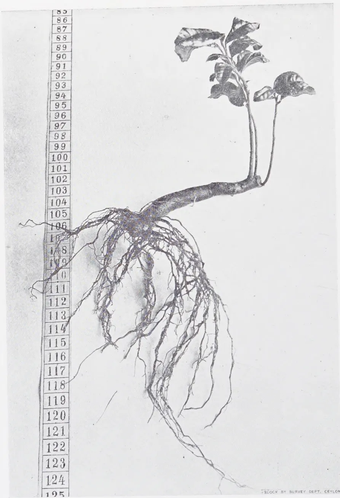
A black and white photograph of a botanical specimen, likely a root cutting, displayed against a light background. To the left of the specimen is a vertical ruler marked in centimeters, ranging from 85 at the top to 125 at the bottom. The specimen consists of a thick, horizontal root segment that has produced a dense network of fine, fibrous roots extending downwards and outwards. From the top of this root segment, a single shoot emerges, bearing several large, ovate leaves with prominent veins. The ruler is positioned vertically, with its top at the 85 cm mark and its bottom at the 125 cm mark. The specimen's root system extends from approximately the 105 cm mark down to the 125 cm mark. The shoot extends from the 105 cm mark up to approximately the 90 cm mark. The entire specimen is shown in a natural, slightly angled orientation. In the bottom right corner of the image, there is a small, faint text label that reads "BLOCK BY SURVEY DEPT. CEYLON".Plate 16.
A root cutting, which produced roots and shoots in field conditions
during two summer months (June-July).
PROF. T. K. KVARAZKHELIA,
THE TEA RESEARCH INSTITUTE OF THE USSR.
OZURGETI-ANASENLI, GEORGIA, USSR.
Experiments on propagating tea by cuttings were begun in 1928. There were tested both stem and root cuttings.
Root cuttings were tested in the open, being obtained either by means of uncovering a part of the roots of a tea bush and separating them from the parent plant or by means of digging out a tea bush and cutting its roots into pieces 7-10 cm. long. Further experiments showed that with a well prepared soil and optimal moisture content there may be used root cuttings but 1 cm. long. A tea bush in dependence with its age and vigour may yield 20-160 root cuttings 10 cm. long.
The 7-10 cm. long cuttings were then sorted according to their diameter into thick (diameter 2 cm. and more), middle-sized (diameter—1 cm.) and thin (diameter less than 1 cm.). 200 cuttings of each group were tested in every variant of the experiment. They were planted at the distance of 20 cm. from each other, the soil being prepared in the usual way. They were not watered. In summer the soil was hoed and weeds removed in the usual way. We used to plant them between May 10 and June 20 and always obtained good rootage in or 2 months after planting (Plate 16).
Thick cuttings gave the best results, namely 52-73 per cent. of rooted plants while thin cuttings gave but 9.5-18 per cent., and middle-sized cuttings gave 37-45 per cent. of rooted plants. In 2-6 months after rooting either in autumn or in spring young bushes were transplanted into the field. Every year some bushes were dug out and their roots examined. It was observed that the development of their root system depended upon the way in which they had been planted — horizontally or vertically. In the first case the roots spread near the surface of the earth, in the second they developed to a greater depth. In both cases
262after two or three years (in dependence from the soil conditions) some horizontal roots changed their direction, which became more or less vertical, and penetrated deeper into the soil.
Experiments on propagation by stem cuttings were carried out in hot-houses and solar propagators. There have been tested four, three, two and single eye cuttings and buds, such as are used in summer budding under the bark into a T shaped incision. All of them produced roots. There were tested cuttings of different ages, of one and two years old shoots, of shoots of the current year, hardwood, semi-hardwood and green cuttings, as well as cuttings of different types: with leaves, with one half of a leaf, without leaves, mallet cuttings, heel cuttings, split cuttings. (Experiments showed a feeble rootage of cuttings without leaves and therefore in further experiments this type of cuttings was excluded). Each variant of the experiment was carried out with 200 cuttings.
Plucking shoots with 3 leaves (Plate 17) gave but 6-10 per cent. of rooted plants in comparison with semi-ripened and ripened cuttings and were excluded after having been tested 3 times.
Green or semi-mature cuttings rooted as follows:
(a) green cuttings with 4 eyes & entire leaves 31-46% (Plate 18).
| (b) | do. | 3 | do. | 48.5-65% |
| (c) | do. | 3 eyes and a leaf, 54% | ||
| (d) | do. | 2 eyes and entire leaves 38% | ||
| (e) | do. | 2 eyes and a leaf, 42.5-59% | ||
| (f) | 1 eye green cuttings with a leaf, 54.5-62.5% | |||
| (g) | green buds with a leaf, 35-58.5% | |||
Brown mature cuttings of shoots of the current season, not older than one growing season, rooted as follows:
(a) brown cuttings with 4 eyes and entire leaves 66-70% (Plate 19)
| (b) | do. | 3 | do. | 55-56.5% |
| (c) | do. | 3 eyes and a leaf, 63-80% | ||
| (d) | do. | 2 | do. | 44.5-62% |
| (e) | brown single eye cuttings with leaves, 44.5-62% (Plate 20) | |||
| (f) | buds of brown shoots with a leaf 33.5% (Plate 21) | |||
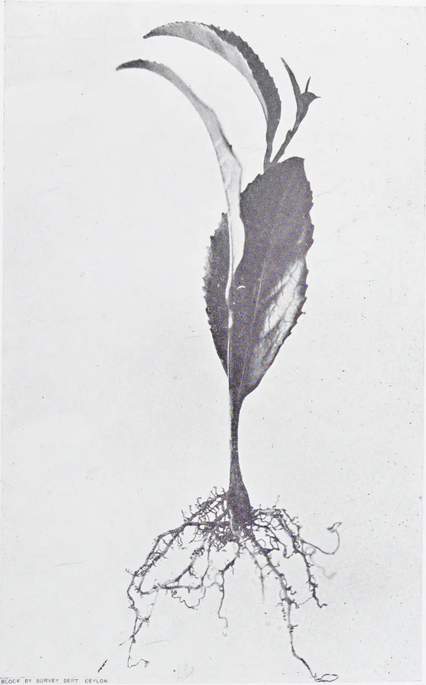
A black and white photograph of a rooted plucking shoot. The shoot has a central, elongated stem with three large, lanceolate leaves. The leaves are arranged in a whorl-like pattern at the top of the stem. The leaves have serrated margins and prominent venation. At the base of the stem, there is a dense, fibrous root system with many fine, branching roots extending downwards. The background is a plain, light-colored surface.BLOCK BY SURVEY DEPT. CEYLON.
Plate 17.
A rooted plucking shoot with three leaves.
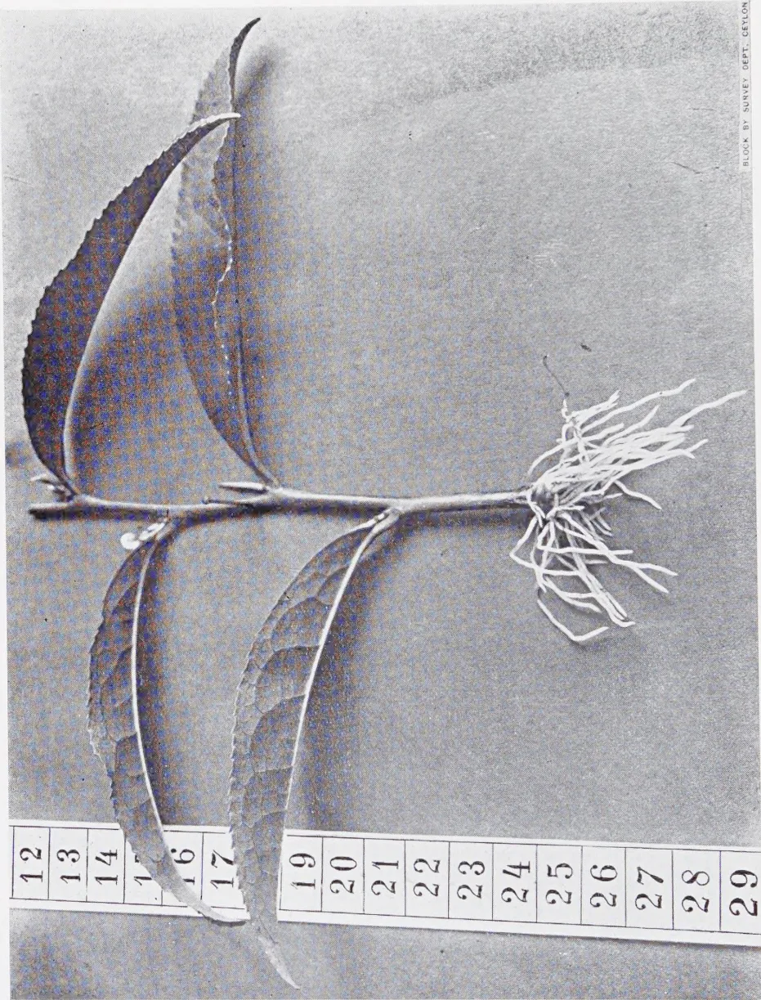
A black and white photograph of a botanical specimen, likely a tea plant, laid out on a ruler for scale. The specimen consists of a central stem with several large, lanceolate leaves that have serrated margins. At the base of the stem, a dense, fibrous root system is visible. The ruler below the specimen is marked with numbers from 12 to 29, with the stem extending from approximately 17 to 25.
| 12 | 13 | 14 | 15 | 16 | 17 | 18 | 19 | 20 | 21 | 22 | 23 | 24 | 25 | 26 | 27 | 28 | 29 |
BLOCK BY SURVEY DEPT. CEYLON
Plate 18.
... leaves and entire leaves
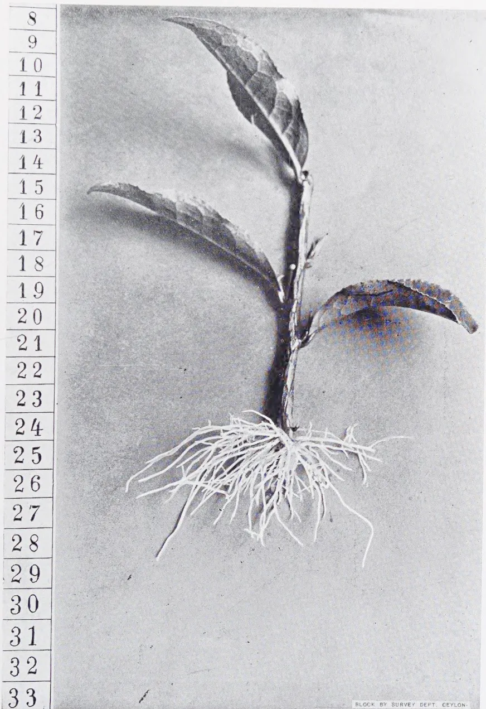
A black and white photograph of a rooted tea plant cutting. The plant has a central stem with four large, lanceolate leaves. The leaves are arranged in an opposite pattern along the stem. The root system is extensive and fibrous, spreading out from the base of the stem. To the left of the plant is a vertical ruler with markings from 8 to 33. The ruler is marked in increments of 1. The plant is positioned such that its base is at approximately the 24 mark on the ruler, and its top leaf reaches approximately the 10 mark. The root system extends from the base down to approximately the 28 mark. The background is a plain, light-colored surface. In the bottom right corner of the image, there is a small text label that reads "BLOCK BY SURVEY DEPT. CEYLON."Plate 19.
A rooted brown (ripened) cutting with four eyes and entire leaves.
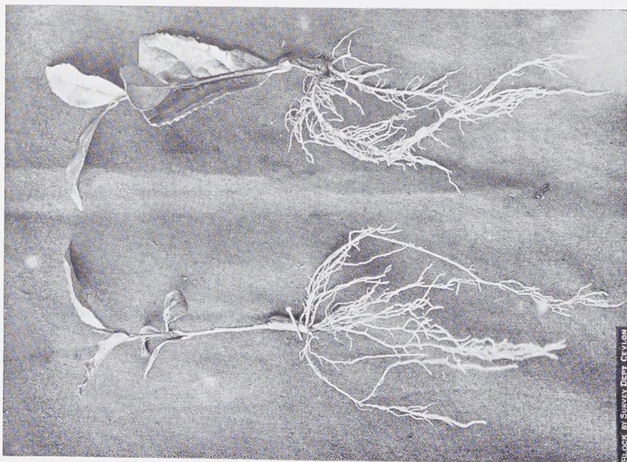
Plate 20.
Rooted brown (ripened) single eye cuttings with leaves,
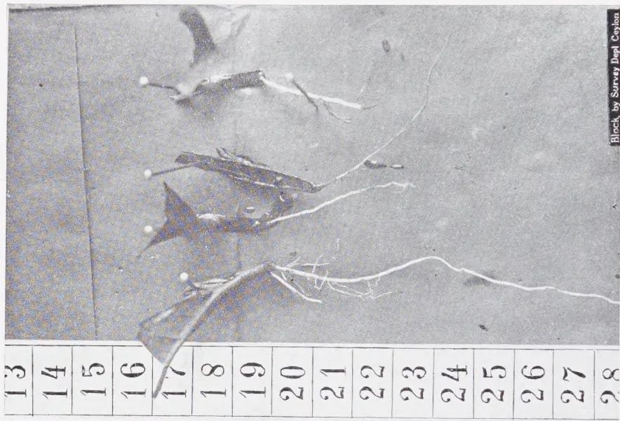
| 13 | 14 | 15 | 16 | 17 | 18 | 19 | 20 | 21 | 22 | 23 | 24 | 25 | 26 | 27 | 28 |
BLOCK BY SURVEY DEPT CAYLON
Plate 21.
Rooted brown (ripened) tea buds
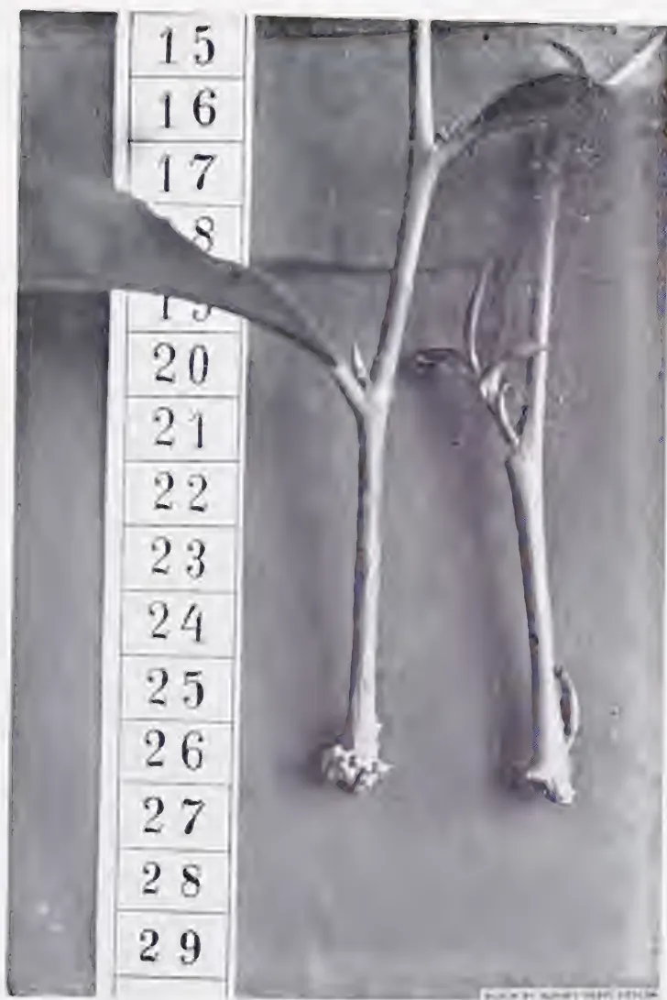
A black and white photograph showing two tea cuttings with callus, but without roots, placed next to a vertical ruler marked from 15 to 29. The cuttings are positioned horizontally, with their callused ends at the bottom. The ruler is on the left, and the cuttings are to its right. The background is a dark, textured surface.Plate 22.
Tea cuttings with callus, but without roots.
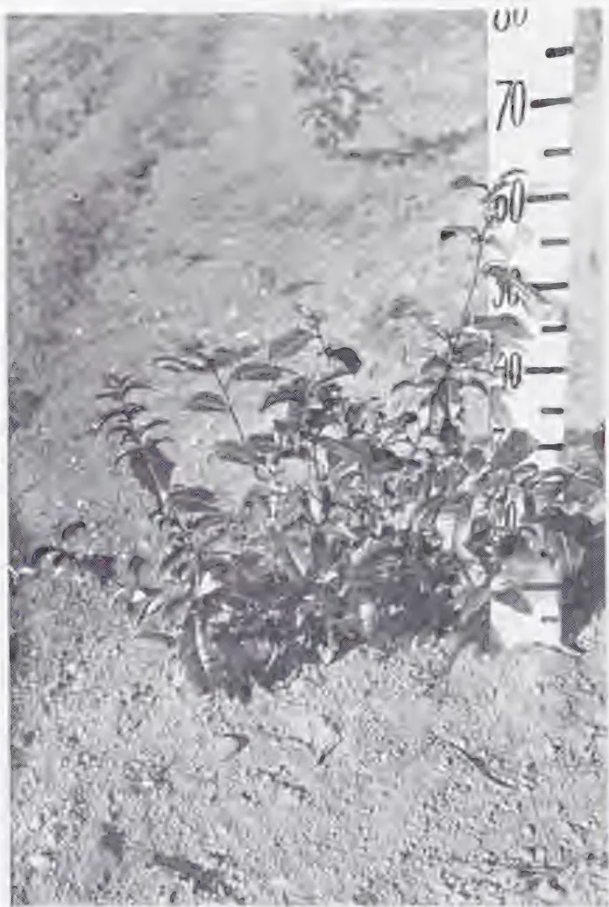
Plate 28.
One year old tea bush, grown out of stem cuttings.
263Cuttings made of older shoots do not root as well, the per cent. of rooted plants being the lower, the older are the shoots. Mature brown cuttings of the current year's growth gave the highest per cent. of rooted plants; semi-mature (green) cuttings gave a lower per cent. of rooted plants. The percentage of rooted plants was the lower, the younger were the shoots of the current year's growth. The plucking shoots with three leaves gave the lowest per cent. of rooted plants. Buds of green shoots, (the same as are used in budding), gave a higher per cent. of rooted plants (58.5 per cent.) than buds of hard-wood shoots (33.5 per cent.). Two years old mallet-cuttings with leaves gave a higher per cent. of rooted plants (19.27 per cent.) than cuttings of the same age with leaves but without mallet. Heel cuttings with leaves gave a higher per cent. of rooted plants (23.5-32 per cent.) than those with leaves, but without heel. There were tested mallet and heel cuttings of 2 and 3 years old shoots, those of younger shoots not having been tested. Later on testings of mallet and heel cuttings were excluded from the programme of experiments as having no practical importance.
Experiments on propagation by cuttings were carried out in hot-houses and propagators of unsatisfactory types, where both the moisture and the temperature of the air underwent considerable fluctuations. The sand for the experiments, though taken from the seaside, was not sufficiently washed and purified of organic admixtures, thus the medium in which the cuttings were grown was not a sterile one. The technical workers were unexperienced and they often changed. The author of the present paper was engaged in other works and could not pay sufficient attention to the work on the vegetative propagation of the tea bush. Due to these unfavourable conditions the per cent. of rooted cuttings belonging to the same type underwent considerable fluctuations: 16-80 per cent. Nevertheless a great number of experiments (about 100,000 cuttings) brought to notice a certain tendency of one year old cuttings to root better than older cuttings. Among one year old cuttings the ripened (the brown) cuttings root better than the green ones. On the contrary, buds of green shoots root better than those of brown ones. In dependence on favourable or unfavourable conditions for rootage, a tea cutting, after having produced a callus (Plate 22) may remain
264alive for a very long time (3, 5 & 6 months) without drying or withering if the sand is sufficiently moist and the temperature does not fall below a certain minimum. With optimal moisture and temperature such cuttings produce roots.
Young plants, grown out of cuttings were transplanted into the field. Those, transplanted directly from pots gave 70-80 per cent. rootage; when first transplanted into a nursery and later on into the field they gave 90-100 per cent. of rooted plants; young cuttings, with tender roots, transplanted directly into the field gave 40-67 per cent. of rooted plants. Rooted cuttings, transplanted into the field gave a vegetative season's growth as follows: (1) with stable manure: 14-16 cm. the number of lateral shoots, 4-30 cm. long, being 4-6, (Plate 23). (2) without manure: 15-30 cm. the number of lateral shoots, 2-12 cm. long, being 3-8.
Cuttings with primary roots, transplanted into the field on June 25, 1932, produced a normal root system and normal shoots by October 30, 1932, i.e., in four months' time (Plate 24). Two years later, by June 25, 1934 their root system was still stronger, the roots were thicker and penetrated deeper into the soil. It did not differ from the root system of tea bushes grown out of seeds. Plate 25 shows the development of the root system of a 2 years old tea bush grown out of a one year old ripened (brown) cutting with 3 eyes. The small active rootlets and the deep reaching roots (marked with a cross) were torn off in digging out the bush.
We planted tea seeds at the same time as buds in order to compare the rate of their growth. Tea plants grown out of cuttings and even those, grown out of buds, do not fall in their development behind plants grown out of seeds. Plate 26 represents tea seedlings (26a) and tea plants grown out of buds (26b) planted in spring and dug out and photographed the same year in summer.
On June 25, 1932 we planted some rooted cuttings and buds into pots filled with earth, which consisted of an upper humus layer and sand. Four months later, on October 30 the roots of the plants were washed and showed a vigorous development of small active rootlets. Plate 27 shows such a plant grown out of a one year old cutting with three eyes. The roots of plants, grown in pots continued to increase both
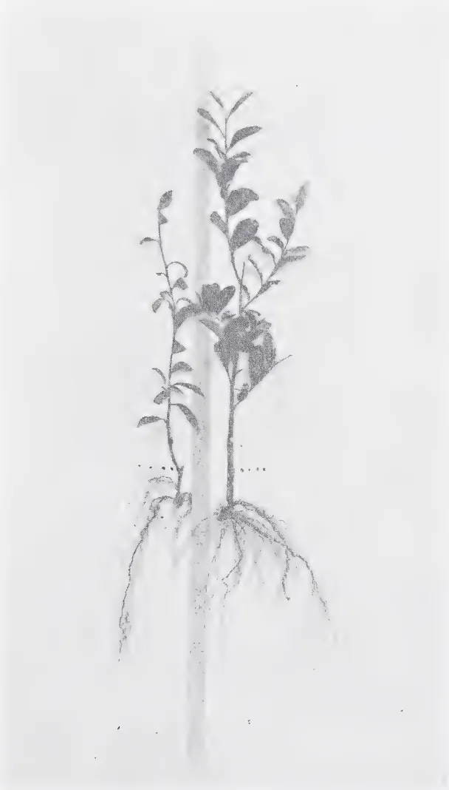
Plate 24.
Rooted cuttings 4 months old. These cuttings with primary roots were planted in the open ground on June 25, 1932 and dug out and washed on October 30, 1932 when this photograph was taken. The dotted line indicates the top of the cutting, above it is new growth.
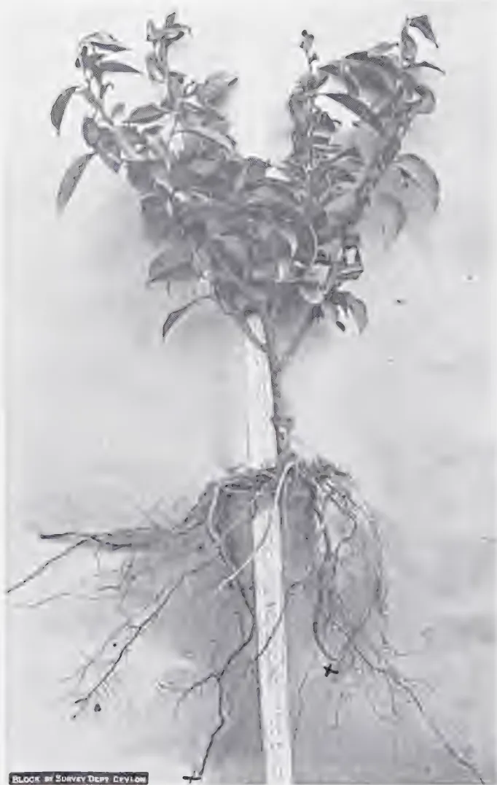
A black and white photograph of a tea bush plant, showing its root system and upper growth. The plant is divided vertically, with the left half showing the root system and the right half showing the upper growth. The root system is complex, with many fine roots extending downwards. The upper growth consists of several branches with small, oval leaves. A small label at the bottom left of the image reads 'BLOCK BY SURVEY DEPT. DEVILON'.Plate 25.
The root system of a two years old tea bush, grown out of one year old ripened cutting with three eyes.
x. The points at which the deep reaching roots have been broken.
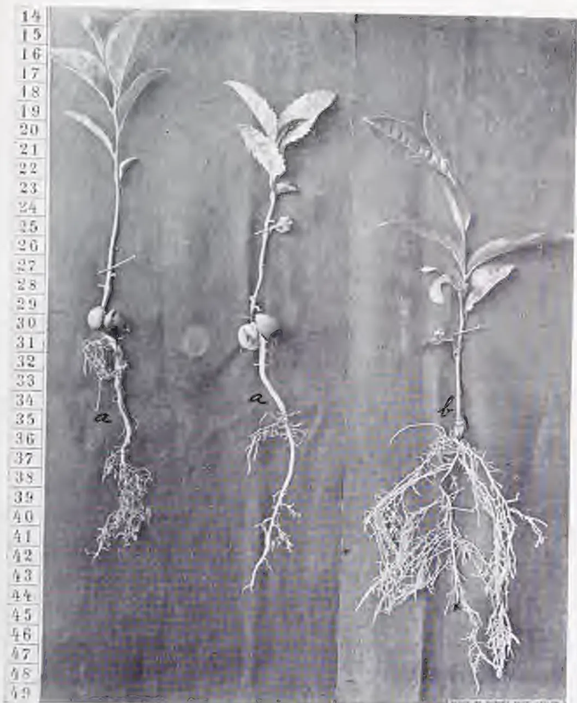
Plate 26.
Tea plants of the same age.
(a) Grown out of seeds
(b) Grown out of bud
x. The point where the taproot was broken in digging.
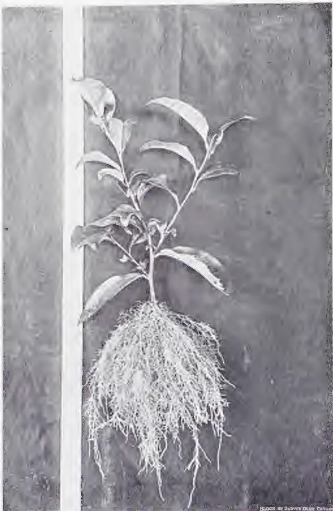
A black and white photograph of a young plant, likely a tea plant, showing its root system. The plant has a central stem with several leaves and a dense, fibrous root system at the base. The roots are spread out in a fan-like pattern. The background is dark and textured. The photograph is framed by a white border. In the bottom right corner of the image, there is a small text: "BLOCK BY SURVEY DEPT. CALIF.".Plate 27.
The root system of a one year old cutting with three eyes, transplanted into a pot with a good soil. The rooted cutting was transplanted on June 25, 1932 and the roots washed on October 30, 1932 when this photograph was taken.
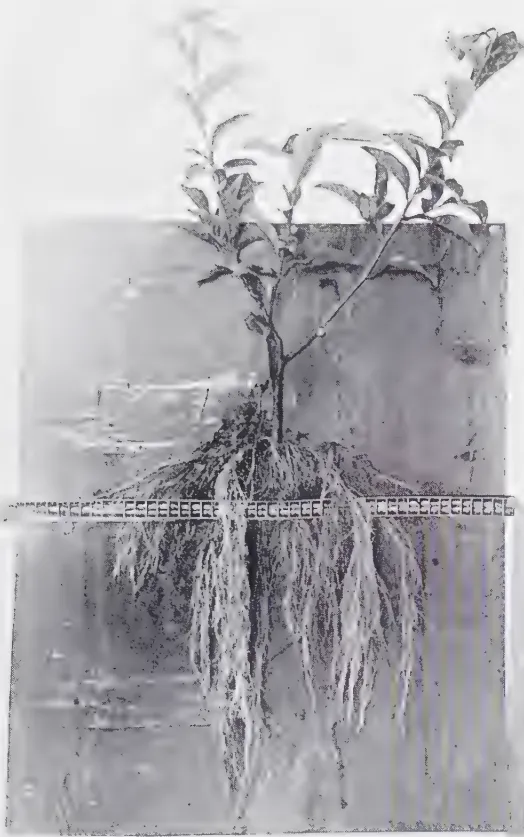
A black and white photograph of a tea bush plant with its root system exposed. The plant has several branches with small, oval leaves. The root system is dense and fibrous, with many fine roots extending downwards. A ruler is placed horizontally across the middle of the root system for scale. The ruler has markings in centimeters, with the number '100' visible. The background is a plain, light-colored surface.Plate 28.
The root system of a one year old tea bush grown out of a one year old cutting with three eyes. Rooted cuttings were transplanted on June 25, 1932 and the plant dug out and the roots washed on June 25, 1933.
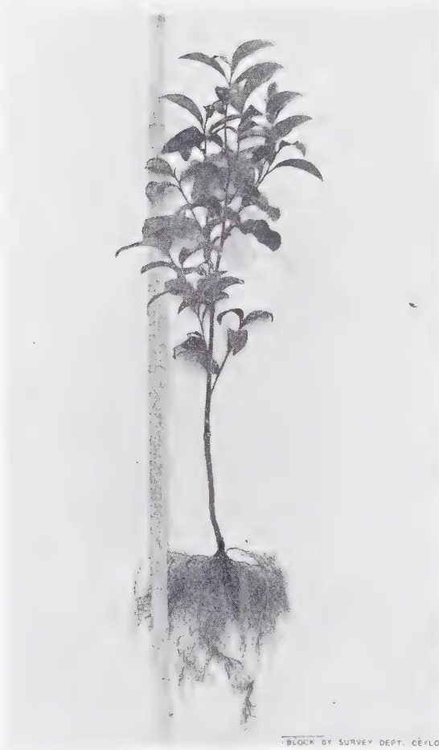
A black and white photograph of a one-year-old tea bush plant. The plant is shown from a top-down perspective, revealing its root system and foliage. The roots are dark and spread out at the base, while the foliage consists of several small, oval-shaped leaves on a central stem. A vertical ruler is positioned to the left of the plant for scale. The background is a plain, light color. At the bottom right of the image, there is a small text label: "BLOCK BY SURVEY DEPT. Ceylon".Plate 29.
One year old tea bush, grown out of a rooted bud in a pot with good soil.
265in their total mass and in their length and thickness, they stopped their growth only in winter, during the resting period of the tea plant. A year later on June 25, 1933 another set of plants were washed and proved to possess roots as shown in Plate 28.
Rooted buds (Plates 21 and 26b) in pots with the above described soil, possessed at the end of the year a root system as represented in Plate 32. The same development of roots is obtained when rooted cuttings are planted in a nursery, where the soil is rich in humus. When transplanted into the field 100 per cent. of plants, possessing such roots take root, while one year old insufficiently branched roots give a high per cent. of failures.
Our experiments lead to the following conclusions:
(1) All sorts and varieties of the tea plant may be propagated by root and stem cuttings.
(2) In the open ground propagation by root cuttings gives the best results. Thick cuttings (2-3 cm. thick) 7-10 cm. long, root better than thinner ones. The thinner and shorter are the cuttings, the lower is the per cent. of rooted plants.
(3) Stem cuttings and buds (parts of a shoot) root best in sterilized and well aerated soil (sand) with optimal moisture content of both the soil and the air (up to 100 per cent.) and optimal temperature (25-30°C). The observance of the above conditions in the open air is difficult, therefore in the open ground we obtain a lower per cent. of rooted cuttings than under cover.
(4) Ordinary hot-beds like those used for seedlings of vegetables are quite sufficient for a good rootage of tea cuttings.
(5) The age of the cutting influences its producing roots. The highest per cent. of rooted cuttings is obtained with cuttings of shoots of the current season's growth. The older are the cuttings (2, 3 and more years old), the lower is the per cent of rooted ones. Hardwood (brown) cuttings root better than semi-hardwood (green) ones. Plucking shoots give the lowest per cent. of rooted plants. Buds of green shoots root better than those of hardwood (brown) shoots.
266(6) The removal of half the blade of the leaf diminishes its transpiration and favours rootage. Both the removal of the whole blade (stoppage of assimilation) and keeping it intact (strong transpiration) diminish the per cent. of rooted cuttings.
(7) The greater are the fluctuations in the surrounding conditions (temperature, moisture, aeration), the slower is the process of rootage; the nearer they are to the optimum, the more rapid is this process. Cuttings with a callus but without roots may live a very long time, rooting slowly in dependence of the fluctuations in the condition of the surrounding medium. For instance in 2.5 months after planting 38 per cent. of cuttings are rooted; in 4 months — 52.5 per cent. (in relation to the original number of cuttings); in 5.5 months — 76 per cent., in 6 months — 80 per cent.
(8) The per cent of rooted tea cuttings corresponds to that of many other trees and bushes, which are propagated by cuttings, and is quite acceptable from the practical point of view.
(9) Propagation by cuttings and buds may be recommended for the purpose of selection of the high-yielding populations of best varieties, for obtaining homogeneous planting material and creating homogeneous tea plantations. Absolutely homogeneous material, obtained from a single parent plant may be planted on experimental plots, and the heterogeneity of experimental plots, and even of plants grown in pots, may be thus avoided.
(To be continued).
267S. J. F. DIAS, DIP. AGRIC. (WYE.),
A.I.C.T.A. (TRINIDAD),
ACTING PROPAGANDA OFFICER,
DEPARTMENT OF AGRICULTURE, CEYLON
THE following is an outline of the more important points in the cultivation of Tobacco in general but with special reference to Cigarette Tobacco and the Flue-Curing process.
Tobacco may be classified into three main classes:
The cigar and manufacturing types of tobacco come under the species Nicotiana tobacum, whereas the third group belonging to the species Nicotiana rustica constitutes another class which is mainly grown for the production of nicotine and includes the Turkish tobaccos.
The following types are all bright leaf cigarette tobaccos suitable for flue-curing and have been recommended for trial in Ceylon:
The latter type has been tried in Ceylon and proved fairly satisfactory in the Kurunegala District during the 1933-34 season.
Tobacco is a crop that is very sensitive to environment (soil and atmosphere) which plays an important part in determining the type of tobacco to be grown, and the crop can only be grown in certain districts. Nearness to the sea is often a great drawback owing to the large amount of sodium chloride present which is reflected in the burning qualities and quantity of ash.
Generally speaking a light sandy loam with a clay sub-soil is considered ideal for bright cigarette tobaccos, and the heavier types of soil for the dark and heavy bodied pipe and cigar tobaccos. Sandy soils with a clay sub-soil will retain fertility better than a sandy soil with a non-clay sub-soil. A clay sub-soil is considered essential for the successful cultivation of tobacco in the United States, and a good sub-soil is said to improve the tobacco both as regards quality as well as colour. In all cases it is essential that the soil should be well drained.
Tobacco requires a moderate rainfall which should be fairly well distributed throughout the growing period and rather light during the maturing and harvesting periods.
Excessive rainfall, especially at harvest time, seriously affects the quality of the leaf, making it thin and deficient in gums, tends to make the midribs coarse, and also renders the crop more liable to spotting disease.
Planting out should be done in a season when the growing period could be completed in 5 to 6 weeks; and in tropical countries where two monsoons are experienced, the growing of tobacco should be restricted to the shortest monsoon period, say a season of 3 months' rainfall. Where no such season is present the planting may be done to catch the late rains, thus allowing the crop to mature into the dry season.
Where tobacco is cultivated in rotation with other crops it would be well to remember that it should not follow a leguminous crop, as excessive nitrogen does not produce good cigarette tobacco, nor should tobacco follow another Solanaceous crop in the rotation. Tobacco may follow a cereal crop, especially if the land is subject to eelworm infestation, as nearly all cereals are immune to this pest; or tobacco may follow cotton.
269The proper treatment of seed-bearers is essential where a farmer intends to carry out his own seed selection for subsequent crops. When the plants in the field are ready for topping (i.e., at the flowering stage) plants suitable for seed-bearers should be carefully selected and marked out. All side shoots with flowers are then removed with the exception of three flower clusters at the top giving a crow's foot appearance. Finally all the leaves below the crow's foot should be removed to a distance of eighteen inches to two feet if the whole plant is allowed to go into seed the seed is apt to deteriorate. Where more than one variety of tobacco is being grown it is necessary to prevent cross fertilisation, and the selected seedheads should be bagged before the flowers open; and as the flower-stalks elongate it will be necessary to raise the bag. (Any strong paper bag will answer this purpose). The seed pods should be harvested as soon as they turn brown and be allowed to dry in a cool dry room. After this the plump pods should be selected and the seed shaken out by nipping off the tips. The seed is then dried in the cool, and stored in bottles until required. If imported seed is to be used, such seed should preferably be grown in seed plots in the first instance, and the seed thus procured from the first generation should be used for planting out the fields in the next season.
Nurseries should be established according to local conditions and should be well sheltered, well drained and accessible to water. As regards size of seed-bed required: a 100 square yards seed-bed will plant 5 acres of tobacco. Three beds each yards wide and 27 yards long will provide the necessary requirements. The soil should be well stirred and then sterilized by burning some brushwood on the soil surface. The ash should be well incorporated into the soil. The seed-beds should not exceed 5 inches in height, and drains 18 inches wide 6 inches deep should be provided between the beds.
Tobacco seed is exceedingly small, some 300,000 to 400,000 seed going to an ounce, and when sowing, the seed should be mixed with some dry sand or ash so as to insure even distribution. As regards the quantity of seed required, heaped tablespoons of seed will be sufficient for sowing 100 square yards of seed-bed. All the seed-beds should not be sown at the same time, and it is
270best to sow at intervals of two weeks or so and to make 2-3 such sowings. The seed should be lightly broadcast and pressed down with a smoothing board and then watered. A watering can with a fine rose should be used. Covering or shading the seed-beds is not absolutely necessary, and in humid countries too much shading induces "damping off" disease and makes the seedlings leggy. The seed-beds should however be sheltered from wind and heavy rain, and in the early stages the young seedlings may be shaded with cadjan thatch over a bamboo framework; and this shade should be gradually reduced as the seedlings get larger and stronger. The seed should germinate in from a week to ten days.
Two pounds of nitrate of soda well dissolved in 50 gallons of water make an excellent tonic for growing tobacco plants in the seed-bed. Sulphate of ammonia may be used in the same proportion, and is possibly the more preferable of the two as there will be less danger of scorching the leaves; and sulphate of ammonia does not leech so quickly from the soil as nitrate of soda. The latter is also apt to force the plants too much. If superphosphate is used, it should be applied before the sowing of the seed.
After the preliminary tillage operations such as thorough ploughing and harrowing have been completed and a good tilth obtained, the land should be ridged, the usual distance between the ridges being about 3 feet.
Crops too highly manured with nitrogen do not produce good cigarette tobacco; and for this reason, as stated earlier, leguminous crops in a rotation should never be followed by tobacco.
A complete mixture containing:
has been found satisfactory for tobacco. The fertilizer should be applied in the furrows 3-4 days before transplanting; the ridges are then split and the land left alone for 3-4 days. The last operation will produce a new set of ridges with the fertilizer below them.
271Transplanting should be done when the plants are 6-9 weeks old and not later than 9 weeks as by then the stems are usually too hard, and such plants fail to form a good root system. A good test to ascertain whether the plants in the nursery beds are suitable for transplanting is to take up a plant which is about 6 inches high, and to bend the root inch from the tip. If the root snaps, the plant is of a suitable age for transplanting, but if on the other hand the root just bends, the plant is considered too old and unsuitable.
Short stocky plants are better for transplanting than leggy ones. Transplanting is best done on a cloudy day if possible. If the nursery beds are dry at the time of transplanting, they should be thoroughly watered before the plants are removed.
At the time of transplanting the marker should be set at the correct distance of planting (i.e., distance between the plants in the row) and driven across the ridged land. When planting out, a depression is first made on the ridge where the marker has intersected it by pressing down the soil. The hole for inserting the plant is made in the depression, and the plant is then carefully inserted and watered immediately. Finally the hole is closed up. It is desirable in planting to have the fertilizer about 4 inches below the plant, and by planting out in a depression made on the ridge as indicated above the roots of the plant are brought within the required distance from the fertilizer. It is a sound practice when planting to bend over one of the leaves of the plant so as to cover the bud and to place a clod of earth on it to retain it in position. This will prevent the bud from drying off during the first few days after transplanting.
High quality leaf requires close planting between plants and rather wider spacing between the rows. Some common distances of planting tobacco are:—
Surface cultivation between the rows after each rain is ideal. In practice, however, several surface cultivations should be given during the growing period so long as this operation could be safely carried out without causing injury to the plants, and should cease when the plants are ready for topping.
When the plants are about 18 inches to 2 feet high it is usual to go round and remove the sand leaves and some of the bottom leaves up to a height of about 6 inches from the ground. These leaves are of little value, and usually harbour the spores of Frog Spot Disease of tobacco. Priming therefore reduces spotting by the removal of disease affected leaves, and also promotes aeration of the plant. All primed leaves should be collected and burnt.
The plants are said to be ready for topping when they have reached the flowering stage, and possess at least 8-10 good leaves. It is difficult to lay down a hard and fast rule with regard to topping, but generally speaking vigorously and healthily growing plants should not be topped at all; but if topped, however, the suckers which grow from the leaf axils should be allowed to remain. Plants selected for seed-bearers are never topped. All poorly growing plants should be topped, usually at a height where the leaves are 5 inches broad. In the latter case all suckers should be systematically removed. The leaves are ready for harvesting from about 4-6 weeks after topping.
Tobacco is subject to a number of pests and diseases, but only a few of the troubles commonly met with in Ceylon are mentioned in this article. The control measures and spray formulae suggested under diseases are those recommended by the Mycological section of the Department of Agriculture, Ceylon.
The presence of stem-borer in the field could be often detected by the poor growth of the plants, and in advanced cases by a wrinkled appearance of the leaf bases. On splitting open the stem the borer could be seen tunnelling within. Where the pest is bad measures to check its attack should be taken in hand
273from a very young age, and consist of the cutting off of all apparently affected low leaves, leaving one or more of the sound suckers to shoot out and produce a fresh plant. All infected material thus cut should be collected, removed from the field, and burnt. In the case of severe infestations it would be a sound farming practice to remove and burn all tobacco stubble after harvest instead of ploughing such material into the land.
(Cercospora nicotianae)
This is a fungus disease causing the spotting of the leaves. The disease is not so important in the case of chewing tobacco as it is on cigar and cigarette tobaccos. The disease occurs on the oldest leaves. Infection is brought about by spores of the fungus falling on the leaves. The spores can germinate in 2 hours and infect the leaf. A week or so later the spots begin to appear, and 1-2 weeks after that, depending on the weather, spores are formed, and in this way the disease can spread throughout the entire crop. As regards control, overcrowding and excessive moisture should be avoided; the early priming of the sand leaves and lower leaves up to a height of about 6 inches from the ground when the plants are young and about 18 inches to 2 feet high will diminish infection considerably. The removal and burning of all infected stubble after harvest is recommended, as this is likely to form a source of new infection.
This disease can be recognised in the field by the wilted appearance of the plant, and by the discolouration of the vascular tissue visible when the stem is split open. The disease is due to bacterial infection from the soil, and the bacteria responsible can only enter the plant through broken or wounded roots. As regards control measures avoid damaging the roots as much as possible in transplanting and by careless intercultivation. The control of Stem-borer and Eelworm will help in controlling wilt disease, as healthy plants are less liable to attack. Liming should not be done when this disease occurs as alkaline conditions are said to favour the disease; on the other hand manures that tend to make the soil acid are said to check the disease. All diseased plants should be uprooted and burnt as soon as they are discovered.
274This disease is classified as a virus disease, and may be identified in the field by the mottled appearance of the leaves and the darkening of the veins when the leaf is held up to the sun. The sap of the diseased plant is highly infectious. "Frenching" is the name given to a type of Mosaic where the leaves become long and thin. In the case of young plants immediate control measures are necessary, as the disease can be carried by hand as well as by insects. All infected plants should be pulled up and burnt as soon as detected.
Eelworm attack very often depends on the previous crop grown on the land. Nearly all cereals are found to be immune to eelworm, and therefore where land is subject to eelworm tobacco should always follow a cereal in the rotation. The practice of a bare fallow turned over periodically is also recommended as a control measure.
The spores of the Frog-eye Disease of tobacco often adhere to the seed capsules and ultimately get mixed with the seed — hence seed treatment becomes necessary which consists of putting the seed in a muslin bag and soaking it in a solution of silver nitrate of the following strength: 9 grains silver nitrate to 1 pint of water. The seed should be soaked in this solution for 15 minutes, and then taken out and washed in six changes of running water. The treatment here recommended will kill all spores mixed up with the seed.
The selection and preparation of the seed-bed is very important from the point of view of disease control. The same seed-bed should not be used over and over again. The seed-bed should be sterilized by the burning of dry vegetable trash on the soil surface, and this will kill out such troubles as eelworm and Rhizoctonia solani (Damping off disease). The seed-beds should be raised so as to afford adequate drainage.
Nursery plants 2-3 weeks old should be sprayed every week or 10 days as a measure of control against Frog-eye Disease.
275The spraying should be started before any signs of the disease appear.
The following sprays are recommended:
(A) BORDEAUX MIXTURE
{ 2 lb. Copper Sulphate
{ 2 lb. Lime
{ 40 gallons water.
(B) BOUISOL
oz. to 1 oz. Bouisol (fluid) to 1 gallon of water. 1 oz. of soft soap should be added to every 2 gallons of the spray as a sticker. The latter spray will also help in checking damping off disease of seedlings. Where the disease is severe it appears in patches in the nursery and in such cases every affected plant should be removed, and the patch freely watered with a solution of Jeyes' Fluid — 1 oz. of the fluid to 1 gallon of water.
4. TRANSPLANTED PLANTS
Spraying is not practicable in the field, and all plants showing any signs of disease should be uprooted and burnt.
5. HARVESTING
The crop is ready for harvesting 60-70 days after transplanting, and when the leaves gradually turn from deep green to a yellowish green shade similar to the colour of a lemon when it is ready for picking. The whole plant may be harvested or single leaves picked as they mature. The latter system is preferable in the case of flue-cured tobaccos. Picking is done by hand and should be carried out every 5-6 days or once a week depending on the barn arrangements. A single picking over a 5-acre field will fill a 16 ft. by 16 ft. barn.
Leaves must if possible be harvested before any spotting appears, and badly spotted leaves should not be harvested. Green leaves or leaves showing vigorous growth such as appear on plants growing on ant hills, or leaves of plants too highly manured with nitrogen, should not be harvested for flue-curing as they will not produce a good cigarette tobacco. The presence of gum on the leaves at harvest is essential, and it is therefore inadvisable to commence harvesting immediately after rain or on a day following heavy rain. Harvesting should be done in
276the morning when the dew is still on the leaves. The harvested leaves should be removed to the barns as soon as possible, and should never be allowed to remain exposed to the hot sun for any length of time. If it becomes necessary to allow the leaves to remain in the field for some time, it is advisable to harvest with a small piece of stem attached which will help in preventing the leaves from wilting too much. Bruising or in any way damaging the leaves during harvest and subsequent handling should be avoided. Some sort of long basket might be used in the field for collecting and transporting the harvested leaves to the barn.
(To be continued).
277A. W. R. JOACHIM, PH.D., DIP. AGRIC.
(CANTAB.),
AGRICULTURAL CHEMIST,
AND
S. KANDIAH, DIP. AGRIC. (POONA),
ASSISTANT IN AGRICULTURAL CHEMISTRY.
DURING the past eighteen months several samples of compost manure prepared under the direction of the officers of the Medical Department from street refuse and night soil have been analysed in the Chemical Laboratory of the Department of Agriculture. A number of samples of compost prepared at various Departmental Experiment Stations or on private farms by the ordinary pit, (1) Indore (2) and pen (3) methods have also been examined from time to time. In view of the general interest taken in the question of compost manure and the interesting results obtained from investigations undertaken in co-operation with the Medical Department on the night soil—refuse composting process, it is considered that the publication of the chemical data obtained would be of value. Of the process itself but little will be said, as the full details both in regard to its practical and public health aspects will be published by the Medical Department in due course. Suffice it to state that the process consists of the periodical treatment of the heaped refuse with a proportion of night soil diluted with water and the regular turning of the heap, especially in the early stages of the process. Decomposition takes place as a result of biological and chemical changes in the heap with the production of heat and the suppression of foul odours. If carried out under suitable conditions, the high temperatures generated — up to about 50°C — should suffice to destroy the putrefactive and pathogenic organisms and harmful insects, and render the final product safe for use as a manure. It need hardly be pointed out that the process is one which cannot conveniently be adopted by the individual; but civic
278corporations should find it a satisfactory means of disposal of municipal waste and a source of substantial profit from the resultant manure.
The manufacture of compost from road refuse and night soil has been carried out systematically in various parts of India for some years — at Bangalore, Nasik and Cawnpore, in Mysore, Indore etc, — and a great deal of useful work on the subject has been done by Fowler and his assistants (4), Jackson and Wad (5), Coleman, Rao and Subrahmanyam (6) and others. But the process of composting is not new and has been practised in China for forty centuries (7) and is widely adopted in Japan, as well as in other places.
In this paper, the results of analysis of samples of street refuse and of compost received from various parts of the Island, where the process has been experimented with, will first be detailed. The manurial values of compost prepared by other methods will then be shown for comparison. The conclusions obtained from the investigations undertaken in co-operation with the Sanitary Engineer and the Medical Officer of Health, Kegalle will finally be discussed.
The method of examination of the samples was as follows: A note was made of the nature and quality of the sample and a moisture determination on it carried out. It was then air-dried and sieved through a 3 mm. mesh sieve. Any organic material left on the sieve was picked out and ground down till it all passed through the sieve. The inorganic material — stones, pieces of glass, nails, etc., was weighed out and its percentage calculated. The sieved material was then analysed for moisture, organic matter, ash, nitrogen, and in some cases nitrates, phosphoric acid and potash. The results are calculated (1) on material as received, (2) on air-dry material and (3) occasionally, for purposes of strict comparison, on a moisture-free basis. To the intending purchaser either of the two former sets of analytical figures will be useful, as he may choose to buy the compost in a moist or air-dry condition.
Table I shows the analyses of samples of refuse and Table II those of typical night soil-refuse compost samples taken from approximately three-month old heaps.
279TABLE I
ANALYSES OF REFUSE MATERIAL
| No. | Origin | Percentages on original sample | Percentages on air-dry sample | Phos. Acid |
Remarks | |||||||||||
|---|---|---|---|---|---|---|---|---|---|---|---|---|---|---|---|---|
| Organic matter |
Ash | Stones etc. |
Nitrogen Potash |
Organic matter |
Ash | Stones etc. |
Nitrogen Potash |
|||||||||
| 1 | Kudugannawa | 56.5 | 10.4 | 27.8 | 5.3 | .20 | — | 5.2 | 22.7 | 60.7 | 11.4 | .52 | — | — | A fairly high proportion of arecanut husk | |
| 2 | Kegalle | 49.8 | 15.7 | 30.5 | 4.0 | .26 | — | 10.5 | 28.1 | 54.3 | 7.1 | .46 | — | — | A high proportion of arecanut husk | |
| 3 | Kurunegala | 29.1 | 15.9 | 47.0 | 8.0 | .47 | .38 | .25 | 3.4 | 21.6 | 64.0 | 11.0 | .64 | .53 | .34 | Material put through a pulverizer; sample drier than usual |
| 4 | Nawala | 43.4 | 11.2 | 31.7 | 13.7 | .43 | — | 5.1 | 18.7 | 53.2 | 23.0 | .73 | — | — | Composted for 3 months without night soil | |
| 5 | " | 43.1 | 13.3 | 34.7 | 8.9 | .45 | — | 4.3 | 26.2 | 53.4 | 14.8 | .76 | — | — | Composted for 1 month | |
| 6 | " | 52.5 | 9.8 | 29.3 | 8.4 | .30 | .21 | .23 | 4.8 | 19.6 | 58.8 | 16.8 | .61 | .42 | .46 | Composted for 10 weeks |
| Average | 45.7 | 12.7 | 33.5 | 8.0 | .35 | .30 | .24 | 5.6 | 22.8 | 58.2 | 14.0 | .62 | .47 | .40 | ||
TABLE II
ANALYSES OF ROAD REFUSE-NIGHT SOIL COMPOST
| No. | Origin | Percentages on original sample | Percentages on air-dry sample | Phos. Acid |
Remarks | |||||||||||
|---|---|---|---|---|---|---|---|---|---|---|---|---|---|---|---|---|
| Moisture | Organic matter | Ash | Stones etc. Nitrogen Potash |
Phos. Acid |
Moisture | Organic matter | Ash | Stones etc. Nitrogen Potash |
||||||||
| 1 | Anuradhapura | 27.6 | 14.8 | 52.9 | 4.7 | .61 | .53 | .61 | 8.5 | 18.7 | 66.8 | 6.0 | .77 | .67 | .76 | Well decomposed |
| 2 | " | — | — | — | — | — | — | — | 5.5 | 12.1 | 69.6 | 13.8 | 52 | — | — | Well decomposed sieved sample received air-dry |
| 3 | Jaffna | 40.0 | 23.4 | 36.6 | — | .84 | — | — | 8.6 | 35.6 | 55.8 | — | 1.28 | — | — | Well broken down |
| 4 | Kadugannawa | 46.1 | 11.4 | 35.7 | 6.8 | .41 | .33 | .32 | 3.9 | 20.2 | 63.6 | 12.3 | .74 | 71 | .70 | Fairly well decom- |
| 5 | Kalutara | 39.9 | 10.5 | 49.6 | — | .48 | — | .34 | 8.3 | 16.0 | 75.7 | — | .73 | — | .52 | posed; sieved |
| 6 | Kegalle | 50.3 | 14.1 | 27.1 | 8.5 | .26 | — | — | 8.8 | 25.9 | 49.7 | 15.6 | .48 | — | — | Partially decomposed; high proportion of arecanut husk |
| 7 | Kurunegala | 40.1 | 11.5 | 41.0 | 7.4 | .43 | .43 | .41 | 7.4 | 17.7 | 63.8 | 11.1 | .67 | .66 | .64 | Well decomposed |
| 8 | " | 40.7 | 8.5 | 43.6 | 7.2 | .40 | .47 | .49 | 8.2 | 13.0 | 67.4 | 11.4 | .62 | .73 | .75 | Well decomposed and sieved |
| 9 | " | 38.7 | 12.3 | 49.0 | — | .44 | .33 | .16 | 6.5 | 18.8 | 74.7 | — | .67 | 50 | .24 | Fairly well decom- |
| 10 | Nawala | 46.4 | 11.1 | 32.1 | 10.4 | .46 | — | — | 3.6 | 19.9 | 57.6 | 18.8 | .82 | — | — | posed |
| 11 | " | 46.2 | 14.8 | 31.0 | 8.0 | .52 | — | — | 4.4 | 26.2 | 55.0 | 14.4 | .93 | — | — | Nitrates .054% on original material |
| 12 | " | 45.6 | 12.0 | 38.2 | 4.2 | .47 | — | — | 4.1 | 21.1 | 67.2 | 7.6 | .82 | — | — | Nitrates .048% |
| 13 | " | 34.3 | 15.2 | 38.7 | 11.8 | .65 | — | — | 4.5 | 22.1 | 56.1 | 17.3 | .95 | — | — | Nitrates .050% |
| 14 | " | 47.0 | 14.3 | 29.5 | 9.2 | .51 | — | — | 5.8 | 25.3 | 49.6 | 19.3 | 1.01 | — | — | Nitrates .005% |
| 15 | Panadura | 41.7 | 15.9 | 35.1 | 7.3 | .70 | .35 | .52 | 8.4 | 25.0 | 55.1 | 11.6 | 1.09 | .56 | .82 | Well decomposed |
| Average | 41.8 | 13.5 | 37.8 | 7.8 | .51 | .41 | .41 | 6.4 | 21.2 | 61.0 | 12.2 | .81 | .64 | .63 | ||
An examination of Table I will indicate that the original road refuse material has an average moisture content of about 45 per cent. an organic matter content of about 13 per cent., and about .35, .3, and .2 per cent. respectively of nitrogen, potash and phosphoric acid. The stone content is about 8 per cent. The percentage constituents in air-dry material are approximately twice these figures. The greatest variation occurs with the stones and foreign material. The other constituents do not show any very wide variation.
Tabulated above are the analyses of typical night soil—refuse composts examined. The average moisture content of the original compost as received in the laboratory is about 42 per cent., a figure similar to that of the refuse material. The average organic matter and stone contents are also about the same as those of the latter viz: about 13 and 8 per cent. respectively, but the nitrogen, potash and phosphoric acid contents are distinctly higher with averages of about .5, .4 and .4 per cent. respectively on material as received or .8, .6, and .6 per cent. on an air-dry basis. These higher percentages of fertilising constituents are obviously the result of the partial decomposition of the organic matter and the amounts of these constituents added in the night soil. The composition of different samples of compost varies fairly appreciably in regard to nitrogen and phosphoric acid. Thus the nitrogen content of moist samples varies from .26 to .84 per cent. and phosphoric acid from .16 to .61 per cent. The potash content is much less variable. The stone content of the unsieved samples shows a fairly wide variation, but not as great as might be expected, the range being from 4.7 to 11.8 per cent. on material as received. With regard to the composition of the sample and its degree of decomposition it has been noted that the better decomposed the sample, the higher is its nitrogen content generally. The nitrate contents of the compost samples in no case exceed a tenth of the total nitrogen. The results of analyses of local compost samples compare favourably with those obtained in Mysore (8) and Bangalore (8).
In Table III are set out the results of analyses of samples of compost prepared by the Indore process at the Government Market Gardens, Nawala from road refuse as the main basic material; in Table IV of samples of pit compost from various Experiment Stations and in Table V of a few samples of pen manure.
282TABLE III
ANALYSES OF INDORE COMPOST
| No. | Nature of compost | Origin | Age in months | Moisture | Organic matter | Percentages on original sample | Percentages on air-dry sample | Nature of original materials, etc. | ||||||||||
|---|---|---|---|---|---|---|---|---|---|---|---|---|---|---|---|---|---|---|
| Ash | Stones | Nitrogen | Potash | Acid | Moisture | Organic matter | Ash | Stones | Nitrogen | Potash | Acid | |||||||
| 1 | Indore method unscreened | Nawala | 3 | 45.0 | 11.3 | 37.2 | 6.5 | .51 | .24 | .41 | 14.1 | 17.6 | 58.0 | 10.3 | .80 | .38 | .65 | Fairly well broken down, high proportion of coconut husk and fibre |
| 2 | Unscreened | " | 3 | 45.0 | 13.4 | 35.7 | 5.9 | .53 | .29 | .42 | 16.5 | 20.3 | 54.2 | 9.0 | .80 | .44 | .64 | |
| 3 | " | " | 3 | 28.9 | 12.5 | 53.7 | 4.9 | .43 | .15 | .20 | 3.9 | 16.9 | 72.5 | 5.5 | .58 | .20 | .27 | Well decomposed |
| 4 | " | " | 1 | 57.9 | 11.7 | 24.9 | 5.5 | .41 | — | — | 5.5 | 26.3 | 55.9 | 9.4 | .91 | — | — | Fairly well decomposed |
| Average | 44.2 | 12.2 | 37.9 | 5.7 | .47 | .23 | .34 | 10.0 | 20.3 | 60.1 | 8.5 | .77 | .34 | .52 | ||||
TABLE IV
ANALYSES OF PIT COMPOST
| No. | Nature of compost | Origin | Age in months | Percentages on original sample | Percentages on air-dry sample | Nature of original materials, etc. | ||||||||||||
|---|---|---|---|---|---|---|---|---|---|---|---|---|---|---|---|---|---|---|
| Moisture | Organic matter | Ash | Stones | Nitrogen | Phos. Potash Acid | Phos. Moisture | Organic matter | Ash | Stones | Nitrogen | Phos. Potash Acid | |||||||
| 1 | Pit manure | Dambulla | 4 | — | — | — | — | — | — | 4.7 | 10.2 | 80.0 | 5.1 | .39 | — | — | Cattle manure, weeds, road sweepings etc. | |
| 2 | " | Gampola | 3½ | 59.1 | 7.5 | 32.5 | 0.9 | .23 | .31 | .21 | 4.8 | 17.6 | 75.6 | 2.0 | .53 | .72 | Ash, leaves, house sweepings, well decomposed | |
| 3 | " | Hanguranketa | 6 | 32.7 | 8.6 | 56.6 | 2.1 | .36 | .37 | .38 | 4.4 | 12.3 | 80.4 | 2.9 | .51 | .52 | We'l decomposed | |
| 4 | " | Kegalle | 2½ | 27.3 | 10.6 | 62.1 | — | .40 | — | — | 5.3 | 13.8 | 80.9 | — | .52 | — | Cow and goat manure, ashes, vegetable refuse, leaves, etc | |
| 5 | " | Labuduwa A | 3 | 39.6 | 25.5 | 31.4 | 3.5 | .25 | .44 | .22 | 4.1 | 40.5 | 49.8 | 5.6 | .40 | .70 | Leaves, ashes, house refuse | |
| 6 | " | Labuduwa B | 4 | 40.5 | 12.8 | 42.4 | 4.3 | .28 | .70 | .28 | 4.3 | 20.6 | 68.1 | 7.0 | .46 | 1.13 | Weeds, house refuse straw | |
| 7 | " | Matale | 3 | 30.6 | 15.6 | 53.8 | — | .55 | 1.58 | .55 | 6.3 | 21.1 | 72.6 | — | .74 | 2.13 | Goat dung, house sweepings, etc | |
| 8 | " | Matugama | 3 | 41.0 | 10.5 | 48.5 | — | .20 | — | — | 4.8 | 16.9 | 78.3 | — | .32 | — | Weeds, Old cadjans, etc | |
| 9 | " | Peradeniya | 3 | 34.0 | 10.4 | 55.6 | — | .41 | — | — | 5.4 | 14.9 | 79.7 | — | .59 | — | Cowdung, ash and leaves | |
| 10 | " | Weeraketiya | 3 | 23.7 | 11.8 | 62.1 | 2.4 | .39 | 1.03 | .52 | 5.2 | 14.7 | 77.3 | 2.8 | .49 | 1.27 | Citronella leaf, ash and cattle manure | |
| Average | 36.5 | 12.6 | 49.4 | 2.6 | .34 | .74 | .36 | 4.9 | 18.3 | 74.3 | 4.2 | .50 | 1.08 | |||||
TABLE V
ANALYSES OF PEN MANURE
| No. | Nature of compost | Origin | Age in months | Percentages on original sample | Percentages on air-dry sample | Nature of original materials, etc. | ||||||||||||
|---|---|---|---|---|---|---|---|---|---|---|---|---|---|---|---|---|---|---|
| Moisture | Organic matter | Ash | Stones | Nitrogen | Phos. Acid | Moisture | Organic matter | Ash | Stones | Nitrogen | Phos. Acid | |||||||
| 1 | Pen manure | Kochchikade | 2½ | 57.1 | 19.4 | 23.5 | — | .52 | .67 | .19 | 5.8 | 42.6 | 51.6 | — | 1.14 | 1.47 | .42 | Green manure, etc., used as bedding for cattle; not fully decomposed |
| 2 | " | Maho | 3 | — | — | — | — | — | — | — | 5.1 | 37.4 | 57.5 | — | .92 | 1.19 | .48 | Sweepings from cattle shed straw, gliricidia loppings |
| 3 | " | Puttalam | 2 | 57.5 | 14.3 | 28.2 | — | .48 | .42 | .23 | 6.1 | 31.6 | 62.3 | — | 1.06 | .93 | .51 | Cover crops material etc., partially decomposed |
| Average | 57.3 | 16.0 | 25.8 | — | .50 | .54 | .21 | 5.6 | 37.2 | 57.1 | — | 1.04 | 1.19 | .47 | ||||
The Indore compost samples show about the same organic matter, nitrogen and stone contents, but, as may be expected, lower potash and to a lesser extent phosphoric acid contents than night soil compost samples. The average nitrogen, potash and phosphoric acid contents are, on original material, .47, .23 and .35 per cent. respectively or approximately .8, .3 and .5 per cent. respectively on air-dry material.
The samples of pit manure will be noted from Table IV to contain, on the average, lower percentages of organic matter and more so of nitrogen but higher percentages of potash than those of night soil—street refuse compost. Individual samples do however show comparatively high organic matter and fertilising constituents. This result is only to be expected considering that the materials used in pit composting—straw, weeds and grasses, cattle and goat manure, house refuse etc.,—are rich in potash. Organic matter and phosphoric acid are about the same in both types of compost. The average composition of samples of pit compost as received is: organic matter 12.6 per cent., nitrogen .34 per cent., potash .74 per cent. and phosphoric acid .36 per cent. while on air-dry material these constituents are respectively 18.3, .50, 1.08 and .53 per cent.
The analyses of the three samples of pen manure, so termed because they were prepared in a cattle pen, showed them to be decidedly richer than other composts in all fertilising constituents except phosphoric acid, in regard to which they appear to be inferior. The average composition of the samples as received was as follows: organic matter 16.9 per cent., nitrogen .50 per cent., potash .54 per cent. and phosphoric acid .21 per cent. or 37.2, 1.04, 1.19, and .47 per cent. respectively on air-dry material.
In Table VI are indicated, for purposes of comparison, the average composition of different types of compost and of local cattle manure. The results are expressed on original material and on a moisture free basis. It will be seen that pen manure is very similar in composition to average cattle manure obtainable locally. This similarity is only to be expected, for they have the same origin. Next in manurial value is night soil—refuse compost with about two-thirds the organic matter and
286TABLE VI
COMPARATIVE MANURIAL VALUE OF COMPOST MANURES AND CATTLE MANURE
| Nature of compost | Percentages on original sample | Percentages on moisture-free basis | Phos. Acid | ||||||||||
|---|---|---|---|---|---|---|---|---|---|---|---|---|---|
| Moisture | Organic matter | Ash | Stones | Nitrogen | Potash | Phos. Acid | Organic matter | Ash | Stones | Nitrogen | Potash | ||
| Street Refuse | 45.7 | 12.7 | 33.5 | 8.0 | .35 | .30 | .24 | 23.5 | 61.8 | 14.7 | .64 | .55 | .44 |
| Refuse Night Soil Compost | 41.8 | 13.5 | 37.8 | 7.8 | .51 | .41 | .41 | 23.2 | 65.0 | 13.4 | .88 | .70 | .70 |
| Indore Compost | 44.2 | 12.2 | 37.9 | 5.7 | .47 | .23 | .34 | 21.9 | 67.9 | 10.2 | .84 | .41 | .61 |
| Pit Manure | 36.5 | 12.6 | 49.4 | 2.6 | .34 | .74 | .36 | 19.9 | 77.7 | 4.1 | .54 | 1.16 | .57 |
| Pen Compost | 57.3 | 16.9 | 25.8 | — | .50 | .54 | .21 | 39.6 | 60.4 | — | 1.17 | 1.27 | .49 |
| Cattle Manure (Average) | 56.0 | 16.0 | 28.0 | — | .53 | .33 | .25 | 36.3 | 63.6 | — | 1.20 | .75 | .57 |
nitrogen content of cattle manure. In other plant food constituents the differences are not appreciable. The average nitrogen contents when calculated on material as received are however, about the same, while night soil compost has a somewhat higher phosphoric acid content. The general conclusion to be drawn is that a moist, sieved sample of night soil—refuse compost is of slightly lower manurial value than ordinary cattle manure, and on this basis, is worth about the price of the latter. The compost prepared from street refuse by the Indore method at Nawala appears to be of rather lower manurial value than night soil compost, but not to that degree as to warrant any marked difference in price between the two types. The pit compost samples are poor in nitrogen but rich in potash when compared with other composts. Their sand contents are generally high. On the basis of these analyses, the manurial value of pit compost may be reckoned at about two-thirds that of cattle manure. Untreated street refuse is also quite useful as an organic manure, but its percentages of fertilising constituents are generally lower than those of treated composts.
A number of investigations were carried out in co-operation with the Sanitary Engineer, Colombo and the Medical Officer of Health, Kegalle to determine the optimum conditions for composting street refuse and night soil.
The Effect of Liming.—The effect of the addition of lime to the heaps with a view to speeding up decomposition was first studied at Nawala. The results obtained are tabulated below.
TABLE VII
Percentages on sieved material at 100°C.
| Organic matter | Ash | Nitrogen | |
|---|---|---|---|
| Unlimed sample | 26.9 | 73.1 | .91 |
| Limed ,, | 4.7 | 95.3 | .99 |
It will be seen that a very appreciable loss of organic matter and a smaller loss of nitrogen occur as a result of liming. This operation is therefore wasteful and unnecessary.
288The Rate of Decomposition of Compost.—With the co-operation of the Medical Officer of Health, an experiment to determine the rate of loss of organic matter as a result of composting was undertaken at Kegalle. From a heap of road refuse which was treated with night soil in the usual manner, representative samples of material were taken periodically and their organic matter, ash and nitrogen contents determined. The percentage of organic matter decomposed was calculated by the method of Rao and Subrahmanyam (6) on the basis that the total ash constituents of a heap remain unaltered during decomposition. The percentage of decomposition is thus: where is the ash percentage at any time of sampling and the ash percentage of the initial sample. The results are shown in Table VIII below.
TABLE VIII| Sampling | Age in months | Stones on | Original moisture | On dry matter at 100°C | Ash | Organic matter decomposed | |
|---|---|---|---|---|---|---|---|
| air-dry material | Nitrogen | Organic matter | |||||
| % | % | % | % | % | % | ||
| Initial | — | 7.1 | 49.8 | .562 | 33.8 | 66.2 | — |
| 2nd | 2 | 8.9 | 49.7 | .771 | 28.9 | 71.1 | 6.9 |
| 3rd | 2½ | 11.7 | 34.4 | .821 | 24.4 | 75.6 | 12.4 |
| 4th | 3 | 15.8 | 37.3 | .998 | 27.0 | 73.0 | 9.3 |
| 5th | 5 | 15.5 | 39.7 | .846 | 22.7 | 77.3 | 14.4 |
It will be noted that the percentage of organic matter decomposed increases with advancing age of heap. The three month old sample is the exception, but the low result obtained in this case can be attributed to sampling error. The highest percentage of organic matter decomposed is 14.4 at the end of five months, but as the two and half months old sample shows a percentage of 12.4, it may be concluded that there is no advantage, from the chemical standpoint, in retaining the heaps for longer than three months. The decomposition figure obtained in this experiment is appreciably lower than that found by Rao and Subrahmanyam (6) at Bangalore, viz: about 20 per cent. This can largely be attributed to the nature of the refuse material. At Kegalle the refuse contained a fairly high proportion of arecanut husk which is very resistant to decomposition. The fact that the heap was under cover and not therefore subject
280to the ideal conditions for decomposition viz: the alternation of wet and dry conditions, is another factor contributing to the low percentage decomposition figure.
An experiment of a different nature, illustrating the importance of turning for a satisfactory breakdown of the product, was carried out at Nawala. One refuse heap was treated in the usual manner with successive weekly charges of diluted night soil in the proportions of 5 per cent., per cent., per cent., per cent., the pile being turned over at each charging. Decomposition was normal. In another heap per cent. night soil was introduced between layers of refuse. At the end of eight weeks it was found that neither the night soil nor the refuse had decomposed at all. The subsequent regular turning of this heap resulted in a fairly satisfactory decomposition.
The Effect of Time of Composting on the Manurial Value of the Product.—The effect of time of composting on the manurial value of the product was studied simultaneously. Table VIII will indicate that the nitrogen content rises with increasing age of sample up to about the third month after which there is no appreciable rise. This data confirms the conclusion already drawn as to the period of composting.
In Table IX are embodied the results of analysis of compost samples of varying ages from different heaps.
It will be observed that unlike in the case of samples taken at different ages from the same heap (see Table VIII), the composition is dependent to a greater extent on the nature of the original refuse material than on the age of the composted material. Thus the nitrogen and organic matter contents of a six week sample are higher than those of a five month old sample. The average composition of the nine samples is however much the same as that of samples of about the same age from various places. This is apparent from a comparison of Tables II and IX.
Further experiments in co-operation with the Medical Officer of Health, Kadugannawa, are in progress to determine the effect on manurial value of retaining a three month old sample of compost for a further period of two months (a) under exposed conditions (b) dried and under cover.
The Effect of Varying the Proportion of Night Soil on the Manurial Value of the Compost.—At Nawala experiments were carried out to determine the effect of varying the proportion of
290TABLE IX| No. | Age of sample in months | Percentages on original sample | Percentages on air-dry sample | Remarks | |||||||||||
|---|---|---|---|---|---|---|---|---|---|---|---|---|---|---|---|
| Organic Moisture matter | Ash | Stones etc. Nitrogen | Potash | Phos. Acid | Organic Moisture matter | Ash | Stones etc. Nitrogen | Potash | |||||||
| 1 | 1½ | 40.4 | 14.9 | 44.7 | .48 | .34 | .35 | 4.7 | 23.8 | 71.5 | .77 | .54 | .56 | Decomposition incomplete | |
| 2 | 2 | 40.8 | 11.0 | 40.6 | 7.6 | .34 | — | 4.6 | 17.7 | 65.5 | 12.2 | .55 | — | A high proportion of arecanut fibre; sample only partially decomposed | |
| 3 | 2½ | 46.6 | 12.1 | 25.8 | 15.5 | .49 | .31 | .33 | 4.8 | 21.6 | 46.1 | 27.5 | .88 | .56 | Decomposition incomplete |
| 4 | 3 | 41.7 | 11.4 | 35.4 | 11.5 | .52 | — | 3.7 | 18.8 | 58.8 | 19.2 | .86 | — | Fairly well decomposed | |
| 5 | 3½ | 49.4 | 10.8 | 26.0 | 13.8 | .41 | — | 9.1 | 19.3 | 46.8 | 24.8 | .73 | — | Sample treated with undiluted night soil | |
| 6 | 4 | 45.9 | 10.3 | 35.8 | 8.0 | .41 | — | 4.3 | 18.2 | 63.3 | 14.2 | .73 | — | between layers without turning; turned later | |
| 7 | 4½ | 28.2 | 18.2 | 38.7 | 14.9 | .77 | — | 4.2 | 24.3 | 51.6 | 19.9 | 1.03 | — | Partially decomposed | |
| 8 | 5 | 46.9 | 9.9 | 32.5 | 10.7 | .41 | — | 9.0 | 16.9 | 55.8 | 18.3 | .71 | — | Sample well decomposed | |
| 9 | 6 | 44.5 | 12.4 | 33.6 | 9.5 | .45 | — | 5.2 | 21.2 | 57.4 | 16.2 | .95 | — | " " | |
| Average | 42.7 | 12.3 | 33.5 | 11.4 | .51 | .33 | 5.5 | 20.2 | 55.6 | 19.0 | .80 | .55 | .57 | ||
night soil to street refuse on the manurial value of the final composted material. The samples were between three and four months old. The table below shows the data obtained.
TABLE X| Sample | On sieved material at 100°C. | |||
|---|---|---|---|---|
| Moisture on | ||||
| Night soil | original material | Organic matter | Nitrogen | |
| % | % | % | % | |
| 1 | 8.3 | 46.4 | 25.5 | 87 |
| 2 | 13.5 | 45.1 | 21.7 | 91 |
| 3 | 14.3 | 46.4 | 25.6 | 1.07 |
| 4 | 17.5 | 45.6 | 23.9 | 95 |
| 5 | 17.5 | 47.0 | 32.9 | 1.10 |
| 6 | 20.0 | 46.2 | 32.2 | 1.17 |
| 7 | 20.0 | 28.2 | 32.0 | 1.33 |
| 8 | 20.0 | 34.3 | 28.2 | 1.21 |
| 9 | 20.0 | 41.7 | 24.3 | 1.12 |
It will be noted that the nitrogen content on sieved material at 100°C is generally the higher, the larger the proportion of night soil added up to 20 per cent., the maximum experimented with. The composition of the original refuse does however appear to affect that of the compost to some extent. From observations made on the degree of decomposition of the samples, the indications are that a 14.5 per cent. charge of night soil is sufficient for satisfactory decomposition in a period of three months, if the refuse material is suitable.
Compost as an 'Activator' for Fresh Refuse Material.—An experiment to ascertain whether the process of breaking down can be shortened by the addition of decomposed compost as an 'activator' was made by the Medical Officer of Health, Kegalle. Three heaps were set up in the following proportions: 1 of refuse to 1 of activator, 2 of refuse to 1 of activator and 4 of refuse to 1 of activator and samples taken after a period of two months. The analytical data were given in Table XI below.
TABLE XI| Treatment | Moisture Stones | Nitrogen/ | |||||
|---|---|---|---|---|---|---|---|
| on | on | Organic | Ash | Total | Nitrate | Organic | |
| original material | air-dry material | matter | nitrogen | nitrogen | matter | ||
| % | % | % | % | % | % | % | |
| 1 refuse : 1 activator | 35.3 | 11.7 | 20.5 | 79.5 | .765 | .083 | 3.32 |
| 2 refuse : 1 activator | 35.7 | 9.5 | 20.1 | 79.9 | .753 | .081 | 3.34 |
| 4 refuse : 1 activator | 40.8 | 12.2 | 21.3 | 78.7 | .763 | .108 | 3.07 |
The samples were all well decomposed but the sample containing 1 of activator to 4 of refuse to a comparatively lower degree than the other two. This is also indicated from the nitrogen/organic matter ratio, which is lowest for this sample. The three samples have about the same nitrogen and organic matter contents. These results do therefore indicate that a proportion of 1 of old compost as an activator to 4 of fresh refuse material is sufficient for satisfactory composting during a period of two months.
The results of numerous analyses of compost manure samples prepared in various parts of Ceylon by different methods and of the chemical investigations on the street refuse-night soil composting process adopted by the Medical Department, have indicated the following conclusions:
(1) Compost manures are generally similar in composition to average cattle manure obtained locally. Cattle manure is however of somewhat higher manurial value than the former, with the exception of pen manure. The latter, as is to be expected, is equal, if not slightly superior, to cattle manure.
(2) Night soil-street refuse compost has the highest and pit compost the lowest manurial value of the other three types examined.
(3) Untreated street-refuse, whether composted or not, is a useful organic manure, but of poorer manurial value than treated refuse.
(4) Liming is of no advantage in the composting process.
(5) There is no chemical advantage in retaining compost heaps under exposed conditions for longer than three months, as any further decomposition of organic matter is not appreciable. Under the conditions of an experiment at Kegalle, the organic matter decomposed during a period of five months was found to be only 14.4 per cent.
(6) The manurial value of compost increases with the time of composting up to about three months after which there is no appreciable change. The analytical composition of the final product is however dependent on that of the original refuse material.
293(7) The manurial value of compost generally increases with the higher percentages of night soil added. A charge of about 15 per cent. night soil is sufficient for the production of a decomposed product of good manurial value.
(8) A proportion of 1 of activator (decomposed compost) to 4 of refuse is sufficient to ensure satisfactory decomposition in a period of two months.
Grateful acknowledgment is made to the Senior Medical Officer of Health, Colombo, the Sanitary Engineer and the Medical Officers of Health, Kegalle and Kadugannawa, for all the assistance rendered in connection with these investigations. Thanks are also due to those private individuals, Divisional Agricultural Officers and their Staffs, and Medical Officers of Health who supplied the samples for examination.
VANDA TESSELLATA Hk.
K. J. ALEX. SYLVA, F.R.H.S.,
CURATOR, HENERATGODA BOTANIC GARDENS, GAMPAHA
THE Vandas constitute a magnificent genus of purely epiphytal orchids, mostly confined to Asiatic countries; there are over a score of species, most of which attain a considerable size and are among the largest found in the Old World.
The majority of Vandas are stately in habit, handsome in bloom and easy to cultivate.
Practically all the species are evergreen. Their leaves are frequently strap-shaped, occasionally oblong and in a few species cylindrical, the apices being either bifid or irregularly jagged.
A good many species of the genus produce many flowered racemes which rise in the axil of a leaf or on the opposite side of the stem.
Vanda tessellata Hk. popularly known by its synonym Vanda Roxburghii Br. grows on the forest trees and among rocks and boulders in decaying humus in the dry regions of Ceylon. It is also indigenous to India and Burma.
It is interesting to recall how it came by more than one name. This orchid was first called Epidendrum tessellatum by Roxburgh and later Robert Brown gave it the name Vanda Roxburghii; Hooker renamed it Vanda tessellata for taxonomic reasons, and this name should now be used.
The plant is usually one to two feet high but under favourable conditions much larger specimens have been found. The stout woody stem is closely set with leaves that arch to almost a semi-circle. The leaf is fleshy and narrow, about six to eight inches long, with a jagged apex.
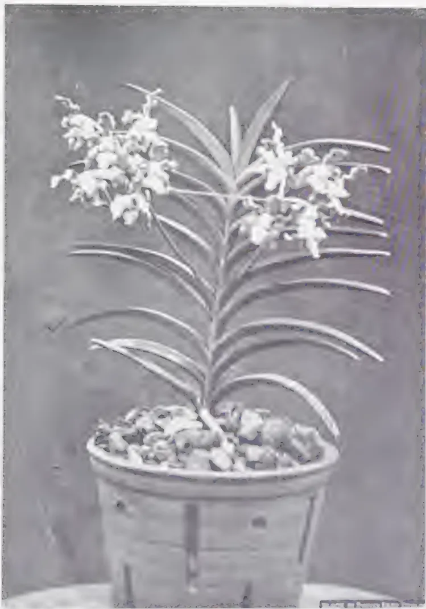
A black and white photograph of a potted orchid plant, Vanda tessellata Hk. The plant features several long, slender, and slightly curved leaves that emerge from a central base. At the tips of these leaves are clusters of small, light-colored, bell-shaped flowers. The plant is housed in a light-colored, cylindrical pot that is filled with a layer of small, rounded pebbles or gravel. The background is a plain, dark surface.✓ Vanda tessellata Hk.
This image is a blank white page. It contains no text, figures, or tables. There are a few very small, faint dark specks scattered across the page, which appear to be scanning artifacts or dust particles. 295A peculiarity of this species is that flowers of different shades of colour occur in different plants. In Ceylon the following varieties have been found:
(1) Vanda tessellata Hk.—Petals and sepals mottled pale-yellow on a dull brownish ground, undersides and margins white; column spotted with rosy pink, labellum violet-blue with dots of a darker shade of the same hue.
(2) Vanda tessellata Hk. var. Forma rufescens Alst.—Petals and sepals of pale-buff with brown lines, undersides and margins white; column mottled with pink and labellum purple. This flower is very conspicuous and is perhaps the prettiest and least common.
(3) Vanda tessellata Hk. var. Forma lutescens Alst.—Petals and sepals dull-yellow greenish brown, undersides and margins white; column mottled with violet-purple, labellum blue.
The flowers are fragrant and about two inches across, borne on an erect spike six to twelve inches long.
The flowering season is from March to August but it is not unusual to see plants in bloom during other months in dry spells. The flowers last a long time, often over six weeks.
Culture.—Vanda tessellata Hk., is not well adapted to pot culture, but we can arrive at a compromise, whereby a certain amount of success can be achieved, by closely following nature. But where the climatic conditions are similar to those of its habitat, as for instance in the wet low-country, all the attention it needs is to tie the plant on to the trunk of a tree and syringe occasionally. The plant will look after itself and flower regularly.
To revert to pot culture, it should be borne in mind that this orchid dislikes its roots being confined in a close, compact manner. Often, roots make their way out of the pot in search of air and warmth. These should not be disturbed or turned back into the pot.
Newly collected specimens should be cleansed of all injured portions and dead roots, placed among the branches of a low spreading shrub or in some similar airy and cool place, and syringed regularly. In the course of a few weeks new roots will begin to emerge from old ones or from the stem itself; this is the time to pot the plant.
296It is best to select only the medium-sized ones for this purpose; and pots with large perforations or wooden baskets are the best receptacles. Holding the plant erect in the receptacle, fill the latter with a compost made of half decayed wood and weathered bits of coconut husk, with a few pieces of charcoal and bits of bone to open the compost.
The small plants can be tied on to small sections of wood with a little coir or moss at the roots to conserve moisture and prevent injury to them when tying the plant with string. The large plants are best tied on to the trunks of trees.
When potting or tying plants against trees aerial roots pointing outwards should not be brought back into the pot or to the tree but allowed to wander at will. Until it has established itself, it is not so much actual watering that is required as a humid atmosphere and this is easily afforded by wetting the surroundings.
297THE obvious importance of local factors — weeds, pests, diseases, labour costs and crop values — always tends to mask the more fundamental question of crop nutrition. Problems of soil fertility and crop rotations are inevitably complex, but it is suggested that in the tropics, and especially for cotton, they are not merely more directly important than in Western Europe, but also more amenable to experimental study.
The cotton crop provides abundant opportunity for loss of nutrient, for it needs cultivation at temperatures and moisture conditions under which soil organic matter is rapidly oxidised away. It provides no fodder or litter for stock and thus leads to unbalanced farming and soil exhaustion. In some of the older cotton areas the inevitable drain on the soil is met by heavy manuring by fertilisers, as in the Eastern cotton States of U.S.A., or through the residues of large cultivated crops, such as Egyptian berseem. Neither of these methods is practicable at present in most of the newer areas and some substitute must be found if stable systems of husbandry are to be attained. The soils start with very little organic matter, the oxidation processes in the soil are extremely rapid and the alternative rotation crops are so few that the agricultural problems can be clearly defined.
Cotton is grown successfully on such a variety of soils that it is unlikely that shortage of phosphate or potash will often prove to be a limiting factor, except in those areas, e.g., South Africa, where almost all crops need phosphatic fertilisers. Attention may, however, be directed to one possible effect of rotation crops, especially leguminous ones, which is sometimes overlooked. In poor, light soils in countries of high rainfall, calcium and other bases are particularly liable to loss by leaching. It happens that in many soils of East and West Africa the surface soil is less acid, i.e., richer in bases, than the deep sub-soil. Presumably the vegetation extracts basic material from the rapidly weathering rock and restores it to the surface during the decay of roots, fallen leaves and branches. Deeply rooting cultivated crops, especially leguminous ones, may be expected to have similar effects, for they are often rich in lime and phosphoric acid. Further, some leguminous crops, (e.g., lupins) can utilise insoluble compounds, such as apatites of mineral phosphates, which are almost useless to cereals and many other plants.
One soil scientist — Professor Williams of Moscow — has even gone so far as to consider the most important contribution of the leguminous plants of leys and grasslands to the maintenance of fertility to be the
* By E. M. Crowther (Rothamsted Experimental Station). Extracted from the Report and Summary of Proceedings of the Empire Cotton Growing Corporation, Second Conference on Cotton Growing Problems, July, 1934.
298restoration of calcium to the surface horizon of the soil. This may be an exaggeration, but it would be unwise to neglect the mineral elements in considering the effects of crop residues.
All soils contain organic matter in all stages of decomposition from living plant and microbial tissues to amorphous colloidal humic materials. Unfortunately there are no satisfactory methods for fractionating or analysing this complex mixture of materials. Even the determination of the total amount of organic matter presents difficulties, for its carbon and nitrogen contents are not constant. In general, the ratio of carbon to nitrogen in the soil organic matter tends to fluctuate around 40:1. Some soils contain notable amounts of such inert materials as charcoal and coal. The total amounts of carbon and nitrogen tend to increase in grassland and forest soils, even in the absence of leguminous plants. Under cultivation they fall at rates which depend on moisture, temperature, and aeration. One-third of the total carbon and nitrogen of the soil was lost in fifty years of continuous cropping with wheat or barley on the light sandy loam of the Woburn Experiment Station. In the tropics the losses are naturally much more rapid. Except where the total amounts of organic matter are small and rates of change extremely rapid, it is almost impossible to follow by chemical analyses the annual changes in the total carbon or nitrogen of field soils. It must, however, be remembered that such processes as nitrogen fixation, denitrification and losses of nitrogen by leaching or as gas cannot be demonstrated in field soils without these difficult analyses. The presence of micro-organisms capable of affecting any of these changes is no evidence that they are in fact playing any considerable part in the production or loss of potential plant food; most of them may be found in any reasonably fertile soil.
It is now well known that green leaves, roots and other materials which are relatively rich in protein, decompose in the soil extremely rapidly with the liberation of much ammonia or nitrate. Such materials supply available nitrogen almost as rapidly as the usual nitrogenous fertilisers and should be treated with similar caution in soils liable to extensive leaching. We have argued that the failure of vetches as a preparation for winter wheat at Woburn is to be explained in part by rapid nitrification and loss during the lengthy periods when the soil is bare or carrying only a small crop. It may be that the apparent unimportance of the organic matter in the tops of leguminous plants in some of the Nigerian experiments results from similarly rapid losses when the tops are buried in the soil.
Cellulosic materials decompose very rapidly provided that sufficient nitrogen is forthcoming from other sources to meet the needs of the micro-organisms concerned. Straw and woody materials decompose more slowly and continue for considerable periods to use up the available nitrogen of the soil.
The effects of crop residues on the production of available nitrogen in the soil may generally be interpreted in terms of the composition of the materials added, the weather conditions, and the aptitude of the soil to
299store water and soluble nutrients. The most vital factor of all is the timing of the operations and this can be studied satisfactorily only in specific field experiments. It must never be forgotten that, in soil capable of rapid oxidation and liable to leaching, all cultivations in preparation for a new crop or in burying the residues of an old one greatly accelerate the decomposition and the risk of loss. Poor green manure crops can rarely be useful, for the inevitable losses may easily exceed any benefit from the material added.
Although nitrates occupy a unique position in the nitrogen economy of the soil, it would appear that undue attention is often given to the nitrate content of the surface soil. There are many reasons why the amount of surface nitrate cannot be regarded as a good measure of available nitrogen. Nitrate owes its unique position to the fact that it is the only stable compound of nitrogen which is not absorbed by the colloids. It is free to move up and down with the soil water and it is readily leached out. When rapid evaporation follows heavy rainfall or irrigation, the capillary rise of water from the saturated sub-soil carries nitrate to the rapidly drying surface where it may remain out of the root range of the crop. Thus, the ridges of the Sudan Gezira cotton soils often have high nitrate contents when the crop is obviously suffering from nitrogen shortage. In Queensland it has been found that in six to eight years cotton soils lose much organic matter and become markedly less permeable to water; the nitrate contents of the surface soil are actually higher than in the more fertile new soils. Here also, it appears possible that the surface soil remains sufficiently wet after heavy rains to allow capillary rise of soil water and surface concentration of nitrate.
In open soils nitrates are obviously liable to be leached away beyond the range of plant roots and it is generally recognized that fallowing or frequent cultivations may be very wasteful. In heavier soils with good soil structure, i.e., with abundance of drainage channels and cracks, the gentle seepage of soil water allows nitrate and other soluble materials to diffuse into the lumps of sub-soil. Heavy rains drain away chiefly through the main channels and extract the accumulated salts only slowly.
Even without leaching or surface concentration the amount of nitrate in a soil is merely a balance between production and removal by plants and micro-organisms. Soils with large reserves of plant residues may contain little more nitrate than less rich soils, but they will continue to produce ammonia or nitrate for much longer periods.
Under almost all conditions of soil and climate it has been observed that soils with large amounts of plant roots, organic manure, or humus absorb and retain water better than those which have lost much of their organic matter by frequent cultivation. The opposite extreme of impermeable and eroding soils is only too well known in many parts of the tropics where clean weeding has been practised. From experience and current teachings in countries with temperate climates, some tropical workers are
300inclined to assign the beneficial effects of cover crops, root residues and manures to the humus they provide. But most cultivated tropical soils contain so little humus and need such frequent additions of fresh organic matter to maintain this modest amount, that it seems more profitable to neglect the hypothetical effects of the humic material and to focus attention on the growing plants, the added materials, and their immediate decomposition products, when considering the physical effects as well as the more purely chemical ones.
It seems important to ascertain whether added organic manures are as effective as the roots of growing plants in draining and aerating the soil and opening up the sub-soil.
In attempting to apply the results of experiments to other soils, either in the same district or more generally, it is essential to obtain some specification of the soil conditions. Too often it is assumed that this must require elaborate physical and chemical analyses. It may encourage agronomists and other cotton workers, who are unable to obtain the collaboration of a soil chemist, to know that the experience of soil surveyors and pedologists in all parts of the world has shown that the first and essential step in soil characterisation is to secure accurate description of the visible characters of soil profile down to and somewhat beyond the root range. Many cotton workers have occasion to explore the roots of plants or have the facilities of cheap labour for digging special pits. They should never miss suitable opportunities for describing, in great detail, the colour, texture, structure and thickness or depth of the successive horizons of the soil profile, as seen in a section. They need not worry about trying to fit their observations into any of the current schemes of soil classification, for all of these are purely tentative and deal with soils of temperate climates, where little cotton is grown. The descriptive soil data obtained in the cotton areas will be useful in extending methods of classifying tropical soils, but they will be even more immediately useful in interpreting the results of rotation experiments in terms of the nature of the soil and sub-soil, the depth of root range, and the water penetration and retention.
301[Summary and conclusions of an investigation carried out in the laboratories of the London Advisory Committee for Rubber Research (Ceylon and Malaya) by G. Martin and W. S. Davey.]
THE results of tests carried out in the laboratories of the London Advisory Committee show that when sheet rubber is prepared by coagulation of latex with sulphuric acid :
The use of correct proportions of sulphuric acid as a coagulant is not harmful to the intrinsic properties of the rubber. On the other hand the economy due to its use is not large (0.14d. per lb. rubber) and there is a possibility of harm arising in two directions, viz.
(1) As long as it is used by only a proportion of estates it will increase slightly the variability of rubber and so tend to prejudice all manufacturers against first-grade rubber in favour of lower grades in which a high degree of uniformity cannot reasonably be expected. There is no doubt that some manufacturers view with apprehension the possibility of an increase, however slight, in the variability of first-grade rubber. In addition, manufacturers of high grade special articles would be unwilling to use on a large scale rubber which they knew had been coagulated with sulphuric acid unless they first had an opportunity of making prolonged and thorough tests with their own products.
(2) The accidental use of excess of sulphuric acid, in addition to causing difficulty on an estate, is known to have a definitely harmful effect on the rubber. The use of excess of acetic or formic acid has no serious effect on the properties of the rubber.
It is not anticipated that the plantation industry would suffer serious disadvantage from the general use of sulphuric acid as a coagulant, but the economy does not appear to be sufficient to justify the risk, especially in view of the objections raised by manufacturers.
302MR. George E. Sladden, who discusses the pruning of coffee trees in the Bulletin Agricole du Congo Belge (Bruxelles 1933, Vol. XXIV, No. 4, p. 400-417, 29 fig.), is a specialist who has the great advantage of having studied coffee growing on the spot in the three regions where the shrub is cultivated under different conditions and in three different ways: Columbia, Java and the Belgian Congo. It is probable that, in writing this article, he intended only to show the planters of the Congo the different possible ways of pruning the coffee tree without wishing to define a scientific method. This would have been premature, as it is only now that comparative pruning tests are being made at the Selection and Experiment Station of Yangambi (Belgian Congo). According to the author the results obtained will still have only a relative value; certain factors must be taken into account: species cultivated, soil and climate. Every planter should strive to adapt to the particular conditions of his plantation the method of pruning which has proved to be the best in the course of these tests and does not raise technical problems too delicate to be solved by local workers. We must be permitted to add two observations to the author's general recommendations:
(1) In our opinion, a clear distinction must be made between the pruning of arabica and that of robusta coffee (see our article in the Revue de Botanique appliquée et d'Agriculture tropicale, Paris 1932, Vol. XII, No. 132, 16 p.).
(2) Among the factors influencing the pruning method, spacing of coffee trees and shading must not be forgotten. The pruning known as "centering" may be necessary in too dense plantations, but a well conducted clearing has the same result: the giving of light and space to the coffee trees. It is not only soil, climatic and economic factors which influence the pruning of the trees, pruning operations must also be adapted to the spacing of the coffee trees and to the shade trees.
The author has given an almost complete description of the systems of pruning followed in the different coffee-growing countries. The figures accompanying the text are very instructive and could even be used for explaining to native workers the desires of the planters. The author deals first with the ramification of the coffee tree, then with topping, an operation which seems simple at first sight, but in which it is well to follow the advice of the author. Sladden prefers topping by degrees to a single topping to a definite height; in our opinion this method, excellent for the arabica, presents disadvantages if adapted to the robusta.
* Extracted from the International Review of Agriculture, No. 8, August, 1934.
303Pruning for production can consist of a simple removal of gourmandisers. When the trees have reached a certain age, centering becomes necessary. The author has given a complete description. It is with reason that he is against the "heavy pruning" and "parrot sticking" of the Kenya planters (see the Monograph: Coffee in 1931 and 1932, Chapter IV).
The manner of treating the coffee tree with several stems is known, with different variations, as "agobiada" or arch pruning of Guatemala, substitution pruning of Costa Rica. The description of the author corresponds more or less to that of B. R. Yglesias (see Coffee in 1931 and 1932, Chap. IV).
If Sladden states that substitution pruning does not give rise to such delicate technical problems as centering, we must be permitted to express doubts on the matter. We have studied in Java, with a planter of great experience, a system of substitution pruning of which we have given too brief a description in the article quoted above, when speaking of a system of "continued stumping". The results of this system, carefully registered during several years, were excellent, but the work is far from being simple and needs constant supervision.
The last chapter, which treats of partial and total stumping, is very complete and easy to understand.
304DEPARTMENT OF AGRICULTURE,
UGANDA PROTECTORATE
ROBUSTA Coffee, rather than Arabica coffee, is not now cultivated on a large scale in the vicinity of Kampala. The term "Robusta coffee" is used to include all the types in that group: these coffees, even when wild, show great variation, and to different forms have been applied many different names, sometimes conferred by botanists who have never seen a coffee tree. It has become customary in Uganda to distinguish two main groups: (1) "Robusta" or erect trees, and (2) "Nganda" or spreading trees; the first class corresponds roughly with the progeny of seed from Java, and the second with native coffee trees. But there are exceptions — some Java trees are spreading and some native trees are erect in habit: and in any case most of the original "Robusta" coffee of Java must have come from Uganda or the Congo.
In the past, selection has been based largely on the size of the bean as this was regarded as a very important character. But the premium received for a very bold type of Robusta coffee is relatively small, and it would seem most important to discover types which are outstanding for vigour and heavy bearing, providing that the bean is of good marketable size.
Observations were continued on the selections labelled three or four years ago, and it has been found that very few trees of the erect type have continued to flourish in native coffee plots near Kampala beyond an age of about six or eight years; in the Masaka district, where the standard of cultivation usually is higher, the trees may last longer. It has been found that there are a number of old spreading trees, aged from ten to over thirty years, which have flourished under native cultivation, and which in spite of their large size and heavy bearing, yield beans whose size is above the average for Uganda.
The survival of these old "Nganda" trees appears to be due entirely to their spreading habit, which has two very beneficial effects — firstly, that the shade greatly reduces the temperature of the soil around the tree, and this is beneficial to root growth; and secondly that it greatly reduces the growth of weeds and especially of grasses. There are few plants that can compete with grasses for a supply of nitrates from the soil, and apparently it is by nitrogen starvation, consequent on the presence of
305grasses in quantity, that much erect Robusta coffee is killed, for the appearance of coffee bushes in neglected plots — the erect stems, crowned with a few short primaries, the pale leaves and the shrivelled berries — closely resemble the symptoms produced when coffee is grown in an artificial medium which is deficient in nitrogen. While the large trees are especially suited to native cultivation, they are worthy of trial on estates; it is not suggested that such trees will give a bigger crop per acre than will erect Robusta trees — the yields of some Uganda estates compare very favourably with those in any other part of the world — but it is probable that, by reducing cultivation, there will be secured a greater return per unit of labour, and that is a more important consideration.
A short study of the effects of selection of Robusta coffee seed was made. In one plot there are adjacent rows of coffee, one row raised from ordinary mixed seed, and one row the progeny of a tree with large cherries; from 20 trees in each row a sample of 20 berries was taken (a total of 400 of each type). The berries were weighed individually when fresh, and classified. The berries were then pulped and fermented, the beans washed, dried, freed from parchment and weighed individually and classified. The results appear to have considerable interest in that they demonstrate:
(a) The increase in size of berry and of bean that may be obtained by sowing the seed from a large berried tree instead of unselected seed — and this in spite of the fact that the male parent or parents were unknown.
(b) The great reduction in variability in the sample which may result from sowing the seed of one tree only; this is a feature of considerable commercial importance when it is remembered that the very small beans are often blackened and shrivelled.
The only decisive test of the value of any coffee selection is by the quality of its progeny, and therefore a small amount of seed of all the more outstanding selections was sown in beds to provide plants for progeny rows when sufficient ground is available.
Several attempts at self-fertilisation of Robusta coffee were made during the year, but met with no success. The small grafted trees were used for this work, as they could easily be enclosed in cages of mosquito netting; when the flowers opened, they were self-pollinated, using camel-hair brushes, but no fruit developed, and the study of this problem is being continued in the current year.
There were obtained from the Belgian Congo small amounts of seed from self-pollinated trees of Java selected clones. These seed were sown in the greenhouse and there were potted up.
Recent work in Java has shown that the cultivation of grafted coffee has not been so successful as was anticipated, for the yields have been much lower than those of trees raised from seed. Therefore no grafting was done during the year, but observations were made on the grafted clones planted out in 1932. Owing to the different ages of the plants it is not possible
306to state which type of stock — C. robusta, C. excelsa or C. liberica — has produced the most vigorous trees, nor is it to be expected that definite results could easily be obtained, as work in other countries has shown that the problems of incompatibility between stock and scion in coffee grafting are very complex. The growth of the grafted trees at Kampala has been quite satisfactory — the average height of the different Robusta clones ranges from about 70 cm. to 140 cm., but it was observed that in April, when Leaf Disease (Hemeleia vastatrix) became noticeable at Kampala, the grafted trees were more badly attacked than were the other trees on the plantation. The grafted Arabica coffee trees also have grown well, and have an average height of about 120 cm., but two trees, which appeared to be quite vigorous, have suddenly died.
If cuttings of coffee could be successfully rooted there would be a method of vegetative propagation which avoided the problems of incompatibility of stock and scion. Batches of cuttings of young shoots of both C. arabica and C. robusta were inserted in the solar propagator at the beginning of the year, but were unsuccessful, with the exception of two cuttings of C. robusta, and further trials are being made.
The Agricultural Chemist is investigating the soil differences, the botanical section is undertaking fortnightly measurements of leaf and shoot growth and observations on root growth, together with daily records of soil temperatures. One definite observation has been made — that during the dry season active root growth on all plots ceased, with the exception of the plot under mulch, where there were always some white roots. The soil on this plot appeared never to become so dry as did that of the other plots, and on some hot afternoons, the temperature (at a depth of two inches) under the mulch was as much as 10°C. lower than that of clean weeded soil nearby: while the maximum soil temperatures of the plot of coffee under shade (clean weeded) were lower than those of the clean weeded plot in the open. It is probable that these facts are of considerable significance, for it has been shown that an excessive soil temperature is often the limiting factor to plant growth in the tropics.
Another experiment on the habit and rate of growth of seedlings of Robusta, "Nganda" and Arabica coffee, was started in October and it is hoped that differences observed between these types will throw some light on their different reactions to the conditions under which they may be grown.
The phenomenon of "dud-budding" is one of the great difficulties of the cultivation of Arabica coffee in Uganda, and it has been suggested that it may be due to the meteorological conditions in some areas.
In order to investigate this point further, it has been arranged that daily records of the evaporating power of the air, as measured by a Piche tube, shall be kept in plots of coffee. Preliminary trials with Piche tube have shown that there are only relatively small differences between the records obtained from the tubes suspended at heights of two feet, four feet and six feet above the soil in any one place; and that the rate of evaporation among coffee under shade is always slightly below that among unshaded coffee.
307LIQUORING TESTSAt the beginning of the year a collection of samples of Nganda and Robusta coffee, prepared by different methods was forwarded to a firm in Mombasa for liquoring tests, these samples were sent under letters in order that there might be no bias, and the report stated that the Nganda coffee, sun-dried in the cherry, was of better roast and cup quality than the Plantation Robusta coffee, which had been pulped and fermented in the usual manner. At the end of the year another collection of samples was prepared and was submitted to brokers in Nairobi, who placed the plantation Robusta first. In the first report, Robusta fermented for 36 hours was rated above that fermented for 24 hours — and this order, too, was reversed in the second report.
Two samples of Nganda coffee from Sese, dried in the cherry and hulled, were despatched to the Imperial Institute for report. Sample A was a mixture from several trees, Sample B was from one tree, which produces a large proportion of peaberry. The merchants' report was:
"A. Fair average quality — even brownish Robusta.
"B. Rather bolder, but uneven size, light brownish, mixed pales. Both these coffees are worth about Shs. 45 to Shs. 47 per cwt., in London (in March, 1933). The presence of peaberrys in Sample B has no material effect on the value. The coffees would find a fairly ready market here in the ordinary way, and it would be advisable to send a trial shipment at an early date."
WILD COFFEESeveral species of coffee grow wild in Uganda, including Coffea excelsa, C. liberica, C. robusta, C. eugenioides — the last two being the most widely-spread, for they are to be found in the forests of many parts of the country — Buganda, Bunyoro and Toro. C. eugenioides (Nandi coffee) appears to be of no commercial value: it forms straggling bushes up to ten feet in height, and bears few fruits which contain very small beans. The wild C. robusta, on the other hand, is gathered in many places, for in certain areas it grows so abundantly as to be the dominant plant in the undergrowth. Wild trees have been inspected in the forests near Kampala, and visits were made to the forests in Toro to see whether the wild coffee showed promise of being valuable for breeding purposes. There is great variability in the wild forms, for example, the coffee in the Itwara Forest, Toro, is of an erect type, with long primaries, broad leaves, and relatively few fruits; while that in the Kibale Forest is of a more spreading type, with narrower leaves and larger clusters of fruits; in both cases the beans are of good size, being larger than those of most of the wild coffees seen near Kampala. Seed of the wild types has been sown in order that their value under cultivation may be tested. It was of great interest to observe that the wild robusta coffees were often growing in soils with a pH value of 5.5-6, and which appeared to be relatively infertile clays or coarse sands; and that the wild trees did not have a strongly marked taproot, but did possess strong spreading lateral roots arising near the level of the soil surface.
308DEPARTMENT OF AGRICULTURE, STRAITS
SETTLEMENTS AND FEDERATED
MALAY STATES
TEA
Areas.—The total area planted with tea in Malaya at the end of 1933 was 2,787 acres of which 684 acres was upland tea, grown at an elevation of over 4,000 feet at Cameron Highlands, and the remainder 2,103 acres of lowland tea.
There were four estates in the lowlands of which two were producing black tea for local consumption. On the Chinese-owned small-holdings, a green tea of low quality was made which sold at prices varying from 40 to 60 cents per lb. The local price for black tea was 55 to 60 cents per lb. Samples of upland tea from the Tanah Rata Experiment Station, Cameron Highlands, were sent at regular intervals to London for reports and valuations. These showed that the tea was of satisfactory quality and could be classed with medium Ceylon teas. Samples of lowland tea from the Central Experiment Station, Serdang, were sent in July and proved to be of only slightly less value, ranking with common Ceylon teas. A commercial consignment of upland tea consisting of 111 half chests of tea of all the five grades made at the Tanah Rata Experiment Station was sent to London and sold on the open market in the last quarter of the year. The price realised averaged 1s. 1½d. per lb. and confirmed the previous valuations. The consignment was well received and obtained a favourable report.
At both the Government experiment stations experiments are in progress on pruning and manuring of tea.
Pests and Diseases.—Two root diseases of tea have been recorded fairly generally. Insect pests have included white ants, mosquito blight and purple mite. None of these have, however, attained serious proportions.
DERRIS (Tuba)
Prices.—Prices ranged between 24 and 30.50 per pikul for dried roots in Singapore, the evaluation depending on ether extract results.
Areas.—The planted area in Malaya is as follows:
| Federated Malay States | ... | ... | 1,369 acres |
| Straits Settlements | ... | ... | 565 ,, |
| Unfederated Malay States | ... | ... | 1,566 ,, |
There appears to be an increasing interest being taken in the commercial utilization of this product, and it is possible that there may be still further developments in this direction as the value of tuba root becomes more widely recognised. At the end of the year a greater demand for the root occasioned a well-marked rise in price.
309The year marks a further period of advance towards the recognition of the fact that in the broadening of the agricultural basis of the country, the lessening of its dependence on imported food and in the improvement of the quality of the produce lie the chief hope of achieving a greater measure of stability in the future.
The agricultural development of Malaya has been phenomenally rapid and it is hardly surprising that in many respects it has been to an extent uneven.
The world depression has brought into prominence the defects of the existing state of affairs and led to apprehension of the need for modification if the alternative of periods of lush prosperity and acute depression, which have so far been the lot of the country, are to be avoided in the future.
It has now become realised that in particular far greater attention is needed to the improvement of peasant agriculture and that in the condition of the raiat the prosperity of the country as a whole is to a considerable extent involved.
Periodic inspection with the object of maintaining a desirable standard of disease control on small-holdings continues to be concerned mainly with the two important permanent crops, rubber and coconuts.
In consequence of prolonged experience of the diseases and pests of these two crops, there had during recent years been a growing tendency to modify in the Federated Malay States and Straits Settlements the general policy on which the inspection work has in the past been based.
At all the stations the planting of the fruit areas is being done gradually as reliable material becomes available, young plants reproduced by vegetative methods being obtained. The orange, lemon and grape fruit plants imported from South Africa have done well at all stations to which they were distributed.
Young tea at several stations received its first pruning when one year old and was given a dressing of complete fertiliser in addition to the organic matter supplied by the leaves of the prunings and in some cases by the green dressing crops grown between the rows. Fertilisers were also applied with beneficial results to permanent crops at certain stations, such as Kuala, Kangsar, Selama and Rembau where the soil is of low fertility.
As was pointed out last year, the problem of maintaining the fertility of the soil on plots used for the cultivation of semi-permanent or annual crops has engaged the attention of the Research Branch. As a result an experiment in the combined use of green dressings and fertilisers has been designed and has been, or is about to be, laid down at several stations. This problem is of particular importance in Malaya owing to the need for finding a cheap and economical system of manuring in a country in which adequate supplies of farmyard manure are unobtainable.
310Tobacco was grown on small plots at most of the stations with varying success, but on the whole fair crops were obtained. The leaf was either sun-dried and sold to local dealers for preparation as cut tobacco, or fermented for use in cheroots.
Tea making was continued throughout the year. Samples were sent to London regularly for valuation and the reports received indicated that the tea was equivalent to medium Ceylon grades.
Tuba.—Investigation showed that carbon tetrachloride was a better solvent for use in the estimation of rotenone than ether and the former is now substituted for ether in this work.
Nine samples of "tuba" were analysed before despatch to Rothamsted for use in a joint investigation with the East Malling Research Station on the correlation of solvent extract and rotenone content with insecticidal action.
No material differences were found in the plant nutrients contents of the various species of "derris" except that D. elliptica — creeping Sarawak — showed a low calcium content and a high potash content in comparison with other types. The cause of the variation in ether extract and rotenone content of the same variety of "derris" grown in different localities remains undetermined and the problem is being further investigated.
Chemical investigations of the other toxic compounds in "tuba" have confirmed the presence of deguelin and toxicarol, the latter in minute amounts; while it is suspected that repeated crystallisations tend to change the various toxic substances found in the root.
An aqueous extract of the root gives a stable colloidal solution, its stability being apparently due to the presence of a glucoside which has not yet been isolated.
Research indicates that rotenone exists in the root in a free state and the extent to which it can be extracted by maceration with water is being examined.
A system of grading copra by marks was evolved during the year and by means of it accurate comparisons of samples of copra can now be made. The system has been found to facilitate tracing faults in manufacture, while it was employed successfully in judging copra samples at the Malayan Agricultural Exhibition.
Examination of baled copra showed that it does not lead to greater deterioration either in quality or in oil content than copra shipped in bags.
A computation of the actual loss in weight sustained by (apart from moisture loss) copra on storage and shipment indicated that fully dry white copra suffered no material loss; on the other hand losses up to 2 per cent. were recorded from copra of ordinary estate quality, while in the case of low grade copra the losses exceed 2 per cent. Copra on which a premium has been paid in London was found to be superior in no way to improved estate copra such as is now being produced on a number of estates locally.
311DEPARTMENT OF AGRICULTURE, NYASALAND
PROTECTORATE
The following table, the figures of which have been taken from the Annual Report on the External Trade of the Protectorate of Nyasaland for 1933, gives the amounts and values of agricultural produce and raw materials exported during the last three years:
| 1931 | 1932 | 1933 | ||||
|---|---|---|---|---|---|---|
| Quantity | Value | Quantity | Value | Quantity | Value | |
| £ | £ | £ | ||||
| Capsicums & chillies | 1,098 lb. | 14 | 239 lb. | 3 | 16,633 lb. | 208 |
| Coffee | 834 cwt. | 1,988 | 789 cwt. | 1,840 | 357 cwt. | 833 |
| Maize & maize flour | 311,452 lb. | 558 | 5,400 lb. | 9 | 39,454 lb. | 44 |
| Potatoes | 34,150 lb. | 182 | 97,136 lb. | 511 | 125,397 lb. | 671 |
| Tobacco | 10,690,581 lb. | 400,897 | 15,082,035 lb. | 565,576 | 10,394,498 lb. | 389,794 |
| Tea | 1,963,452 lb. | 49,129 | 2,573,871 lb. | 42,898 | 3,276,477 lb. | 59,656 |
| Beeswax | 195 cwt. | 1,092 | 170 cwt. | 953 | 240 cwt. | 1,348 |
| Cotton (lint) | 1,011 tons | 37,729 | 935 tons | 34,916 | 1,082 tons | 50,014 |
| Cotton seed | 628 tons | 1,257 | 1,138 tons | 2,276 | 616 tons | 1,232 |
| Fibre (all kinds) | 242 tons | 2,661 | 940 lb. | 3 | 20 tons | 162 |
| Groundnuts | 1,100 lb. | 6 | — | — | 253 tons | 1,519 |
| Rubber | — | — | — | — | 71,955 lb. | 300 |
| Strophanthus | 10,581 lb. | 1,587 | 7,601 lb. | 1,140 | 17,521 lb. | 2,628 |
| Rice | 2,176 lb. | 10 | 6,201 lb. | 28 | 2,438 lb. | 11 |
| Sesame seed | — | — | — | — | 7,184 lb. | 30 |
Increases are recorded in the case of tea, cotton, capsicums and chillies, maize and maize flour, potatoes, beeswax and strophanthus. Groundnuts and sesame seed appear for the first time, at least for a number of years, and it is hoped that the 1933 amounts are the beginnings of a large export. Small quantities of fibre and rubber were exported, but unfortunately they do not point to a renewal of activity in these industries. Cotton seed exports declined as a direct result of low home prices, while tobacco exports declined as a result of lack of interest in one direction and a voluntary restriction in another.
312THIS is a subject which has been receiving considerable attention recently, in view of the threatening timber famine. Very little has been done in Cyprus to encourage the preservation of wood; this is all the more remarkable when one considers the lack of trees in the Near East. The object of this article is to enumerate briefly some of the methods used to render timber more durable, under many varying conditions.
The chief enemies of timber are fungi and insects and these can damage timber under favourable conditions only, such as temperature, moisture, etc. Since man cannot control the elements, it is necessary for him to devise some method or methods for making timber immune to deterioration. Timber which has been well seasoned and is used for interior building construction, furniture, fittings, etc., and where the changes in temperature and relative humidity are not considerable, need not receive any preservative treatment, if precautionary measures have been taken to prevent insect or fungi attack during felling, sawing, seasoning, and manufacture also. Nearly all modern interior work is treated with polish, paints, varnishes, etc., which are in themselves antiseptics.
Decay is the greatest bugbear in all forms of converted timber, and yet at the same time it may be considered as one of the greatest assets to the forester. This may sound paradoxical, but if we did not have decay in the forest we should have to go to considerable expense in clearing up rotten trees, branches, bark, and all the waste from felled trees. This decomposed material goes to form what is generally known as humus. Insects, fungi and certain forms of bacteria are responsible for the decomposition.
The wood substance, or tissue, is the food supply of these insects and deleterious fungi. Prevention of attack means that some method must be adopted which will render the wood unpalatable to insects and fungi. Hence, to put it briefly, wood preservatives are insect and fungal poisons.
It has been said that certain types of oil preservatives render wood inflammable, but such preservatives are usually used for marine and outdoor work, and even should it be necessary to use such material for house construction, there are several methods whereby the wood can be rendered non-inflammable.
I propose to discuss several methods of wood preservation which might be of use in Cyprus. In each case I have considered the question of economy in cost of preservative and apparatus or equipment, for carrying
* By F. S. Danks, Assistant Conservator of Forests, Utilisation Officer. Extracted from The Cyprus Agricultural Journal, Vol. XXIX, Part 3, September, 1934.
313out the treatment. I do not propose to refer to any of the more advanced methods of pressure and vacuum impregnation treatment, where the machinery is much too complicated for any Cypriot engineer. Technicalities have been avoided, wherever possible.
This is probably the oldest method of protecting timber from decay. It is still commonly used in Cyprus. It is very probable that the primitive man knew of it when he hardened the point of his wooden spear in the fire. Certainly Lake Dwellers knew the preservative value of charring wood. Briefly the process consists in holding the wood to be treated over a fire until the outer fibres are charred. This means that the outer layers of the wood are charcoal which is not attacked by fungi or insects. The depth of charring is usually inch. to inch. The inner layers are thus protected from any injury.
The result of rapid charring with unseasoned timber is that case-hardening occurs. Contraction of the outer layers and the increased pressure of steam and moisture in the inner layers brings about a state of considerable tension between the outer and inner layers, with the obvious result that the charred part splits and cracks so badly, that it is generally known as "starring" professionally. The writer has seen Eucalyptus telephone poles treated in this way, which have split in half for a distance of more than 2 feet up from the butt. It is fairly obvious that the area thus exposed to attack is considerably increased. Unfortunately the charring process in Cyprus is carried out much too rapidly and with unseasoned wood.
There is a secondary reaction caused by the charring of the outer layers. Destructive distillation is set up where the heat is sufficiently high, i.e., in the neighbourhood of the charred areas. This pyroliqueous acid so formed is in itself a fairly powerful preservative agent and is extremely toxic to fungi.
The process of charring is not to be recommended unless as a last desperate resource, and even then it should only be used on thoroughly seasoned timber, and the process should be carried out slowly
This form of treatment is probably used more extensively than any other superficial method. As the name suggests, it consists in merely applying the preservative to the surface of the wood by means of a brush. As is always the case in superficial treatment, the best results can only be obtained when the wood is thoroughly seasoned. Preservatives have always better powers of penetration into dry woods. When using "oil" preservatives it is definitely advantageous to heat certain of them to say to F., e.g. Creosote. Even under favourable circumstances it will be found that the preservative rarely penetrates more than of an inch.
It is very essential that special care be taken in working the preservative into all checks, cracks, joints, etc., as thoroughly as possible. Paints, varnishes, enamels, etc., can all be considered as preservatives under brush treatment, either for indoor or outdoor wood work.
314The Cyprus Railways use sleepers, imported from abroad which have been subjected to pressure treatment with creosote as the usual preservative. Even then the General Manager, Railway, finds it profitable to recondition certain of these sleepers in order to prolong their utility. The General Manager, Railway, has kindly granted me permission to quote the following figures :
1 40-gal. Barrel of Bitumen Solution costs 30s.
This amount of solution is sufficient to paint between 850-900 sleepers.
1 labourer on a salary of 15 cp. per day can paint 50-55 sleepers per day.
Cost of brush is 1s. cp.
Size of sleepers, 5 feet 6 inches 4 inches.
Costs work out as follows :
| £ | s. | cp. | |
|---|---|---|---|
| Bitumen solution ... .. | 1 | 10 | 0 |
| Brush ... .. | 0 | 1 | 4 |
| Labour (17 men @ 15cp. per day) 850 sleepers | 1 | 8 | 3 |
| £ 2 | 19 |
Allow £3 for treating 850 sleepers. Then actual cost per sleeper works out at 26 paras.
There is always a certain amount (in some cases a considerable amount) of difficulty in working the preservative into checks, cracks, etc., and so one finds that dipping is more effective than the brush method. In dipping it is necessary to have some tank or container large enough to hold the preservative and allow the material selected for treatment to be submerged. In many instances it is not necessary to submerge the whole piece of timber, e.g., fencing posts, gate posts, telephone poles, etc. In such instances it is only necessary to treat that part which comes into intimate contact with the ground.
Dipping is safer and surer than brush treatment and in general yields much better results. Dipping is a non-pressure process and relies on the absorptive properties of the wood to secure successful penetration; no doubt atmospheric pressure helps to some extent in forcing the preservative into the wood. The apparatus may consist of any open vessel, such as a vat, barrel, tank, cylindrical metal retort, etc.
There are many different methods and processes which may come under the heading of dipping for the purposes of this brief article, although they are not considered as such from a technical point of view. I propose to enumerate a few of the more important in common usage in various countries. Some of them are eminently suitable for Cyprus conditions. It may even be found that two methods may be employed together.
Kyanizing Process.—The timber is steeped in a solution of perchloride of mercury (mercuric chloride or corrosive sublimate) at atmospheric temperature and pressure. The wood is built up in the tank much
315in the same way as is done in seasoning, i.e., stickers or lathes are placed between each layer of timber, and a space is left between each piece in the layer. The reason for this is to allow of a free circulation of the solution. The strength of the solution is usually 1 per cent.
The length of time the timber must be kept submerged is variable as it principally depends on the thickness of the material to be treated. A rough estimate would be to allow one day for every inch of thickness, plus an extra day, e.g., a 2-inch plank would steep for 2 days plus the day extra, making 3 days in all.
Needless to say, corrosive sublimate is an extremely dangerous poison, therefore it is imperative that it be handled with the utmost caution. It is always advisable to have a container near the tank from which the solution can be pumped into the tank, and at the completion of the treatment it can be withdrawn and pumped back into the container.
Open Tank Process.—The plan or apparatus consists of a tank or container of any size convenient to the dimensions and quantity of timber to be treated at any one time. The container or tank must be so constructed that it may be heated directly by a fire under the tank or preferably by steam coils passing through the liquid at the bottom of the tank. A suitable storage tank should be adjacent, fitted with a pump so that the preservative may be pumped into or out of the tank.
The timber is placed in the tank and arranged as previously described. The creosote (or other preservative) is then admitted until it covers the timber to a depth of say 4 inches to 6 inches (allowance must always be made for the expansion of oils). The steam coils are then heated until the temperature of the creosote reaches 200°F. in the tank. This temperature is maintained for one hour and then allowed to cool down; care must be taken to keep the timber well covered. Although the usual time allowed to cool down is about 24 hours, this need not be adhered to very strictly, but may vary with the needs or requirements of the operator. The lower the temperature to which the preservative is allowed to cool, the greater will be the absorption.
If the wood is seasoned (as it should be) it contains minute air spaces; thus when the wood is heated the air expands and a certain amount is driven out as air bubbles which, with certain timbers, cause a thick froth on the surface of the creosote. On cooling, a partial vacuum is set up owing to the contraction of the air left in the timber and so the preservative is drawn into the tissues of the timber. This process works very well with sleepers, fencing posts, telegraph poles, and for general farm work.
Powellizing.—In this process the apparatus is similar to the "Open Tank Process".
The preservative in this case is a saccharine solution, frequently containing an admixture of arsenic. Time taken depends on size and species of timber, and may vary from a few days to 3 or 4 weeks. The
316saccharine solution coils at a slightly higher temperature than water, therefore the water in the wood escapes as steam. Owing to the slight difference in temperature, the action of converting the wood moisture into steam is not so violent as it would be with creosote at 200°F. The wood fibres are not badly ruptured as would be the case with creosote, and so green wood can be treated by this process as soon as cut.
The material should be left in the solution until quite cold. This insures a very thorough absorption.
Burnettizing.—The solution is made up in the proportion of 1 lb. of zinc chloride to 5 gallons of water. Time of immersion varies from 10 to 21 days (nearly always done by pressure treatment in modern, up to date practice, as the time is reduced to 5-6 hours). Apparatus may be barrels, tanks, etc., etc.
Margayizing.—A copper sulphate solution is used in the proportion of 1 lb. of the salt to 4 gallons of water. Time of immersion is approximately 2 days for every inch of thickness of the material.
I think that enough has been said about wood preservation to form a suitable introduction to a further series of brief articles on this subject.
There is one more process I might mention, which may be of interest to Cypriots. It is used largely by the American farmers for preserving fencing posts. The posts are allowed to stand in a strong solution of lime water until required. They are then removed and dried. When thoroughly dry they are painted over with a dilute solution of sulphuric acid (). This sets up a form of case-hardening where the acid was applied. It should only be used on dry soils.
The two chief types of preservatives are oils and salts, or a mixture of the two in definite proportions. Generally speaking the oils give better results under all conditions, whereas the majority of the salts are soluble in water and therefore cannot be used in damp soils as the salts leak out very rapidly. On the other hand salts are much cheaper and where the conditions are dry or on well drained land they have proved just as efficacious as the oils.
The vast majority of people to-day are under the impression that preservatives are of rather a drab and monotonous colour. There are many proprietary preservatives on the market to-day which can be obtained in a wide range of pleasing colours; oak, mahogany, ebony, greens, reds, browns, and varying in price from 1s. 8cp. to 5s. per gallon. These are known generally as the decorative preservatives, and when used on timber with a distinctive grain the effect is often very pleasing.
317Minutes of the Twenty-Fifth Meeting of the Board of Management, Coconut Research Scheme, held in Room No. 202, New Secretariat, on October 5, 1934.
Present.—Mr. C. H. Collins, C.C.S., (Treasury Representative), Mr. Austin Ekanayake, Sir H. Marcus Fernando, Messrs. F. A. Obeyesekere, M.S.C., G. Pandittesekere, J.P., U.P.M., R. Sri Pathmanathan, A. W. Warburton-Gray, J.P., U.P.M. and Dr. R. Child, Chief Technical Officer, who acted as Secretary.
The Director of Agriculture (ex-officio Chairman of the Board) regretted his inability to attend, and Mr. C. H. Collins was unanimously elected Chairman of the meeting.
1. Minutes.—The minutes of the twenty-fourth meeting of the Board of Management held on June 1, 1934, were confirmed.
The Board expressed the opinion that it was desirable to hold more frequent meetings, at least once in two months if possible.
2. Board of Management.—The Chairman reported that Mr. Sri Pathmanathan had succeeded Mr. A. B. Gomes as Chairman of the Low-Country Products Association and as an ex-officio member of the Board; he welcomed Mr. Sri Pathmanathan to the Board.
3. Staff.—The Chairman reported that the Chief Technical Officer had consented to serve as a member of the Standing Committee on Industrial Research and Development and also of a Committee recently appointed to consider the co-ordination of Research in Ceylon. The Board approved.
The Geneticist's new agreement was tabled and was approved by the Board.
4. Finance.—The Draft Estimates for the year 1935 were considered in detail. Under Capital Expenditure provision was made for the purchase of a jungle area, and a sum of Rs. 4,500 for Laboratory Equipment.
Provision of Rs. 14,000 in 1935 was made for repayment of the third instalment of the Government Loan.
The Statements of Receipts and Payments for the quarters ending March 31, and June 30, 1934 respectively were approved.
5. Accumulators.—The Chief Technical Officer reported that the installation of accumulators had been completed and that the latter had been in operation since August 31, 1934. The necessary financial provision was sanctioned by the Board.
The Board discussed the question of periodical inspection of the electrical equipment at Bandirippuwa.
6. Estate.—The monthly Progress Reports of Bandirippuwa Estate for May, June, July and August, 1934 were all approved by the Board.
7. The Board sanctioned a supplementary estimate for meeting the cost of publishing the Chief Technical Officer's report on the Local Soap Industry.
318Minutes of the Twenty-third Meeting of the Board of Management, held in the Committee Room of the Chamber of Commerce, Colombo, at 10 a.m. on Thursday, October 18, 1934.
Present.—Dr. W. Youngman (in the chair), Messrs. C. H. Collins, C.C.S., (Deputy Financial Secretary,) Leo B. de Mel, J.P., U.P.M., George E. de Silva, M.S.C., W. P. H. Dias, J.P., C. H. Z. Fernando, M.M.C., F. H. Griffith, M.S.C., F. H. Layard, P. R. May, F. A. Obeyesekere, M.S.C., H. F. Parfitt, M.S.C., C. A. Pereira, B. M. Selwyn and Col. T. Y. Wright.
Mr. T. E. H. O'Brien, Director of Research, was also present by invitation.
Apologies for absence were received from Col. T. G. Jayewardene, V.D., M.S.C., and Mr. L. P. Gapp.
Draft minutes which had been circulated to members were confirmed and signed by the Chairman.
The Chairman welcomed to the Board Mr. W. P. H. Dias, J.P., who had been nominated to act for Mr. C. E. A. Dias, J.P., during his absence from the Island.
(a) Nursery at Dartonfield Estate.—The Chairman reported that the Board had approved of application being made to the Rubber Controller for permission to plant the nursery. Permission had been obtained under Clause 44 (2) of the Restriction Ordinance and the nursery had been planted.
(b) Visit of Chemist to Calcutta.—The Chairman reported that the Board had decided in favour of Mr. M. W. Philpott making a short visit to Calcutta in connection with the treatment of jute woolpacks with latex, as requested by the Rubber Growers' Association. The date of his departure had not been settled.
Draft estimates of income and expenditure for 1935, which had previously been circulated to members were considered. After discussion and minor alterations the following estimates were adopted:
| Income | ... | ... | ... | Rs. 163,600 |
| Expenditure | recurrent | Rs. 139,792 | ||
| „ | non-recurrent | „ | 27,011 | „ 166,803 |
After consideration of the present position in regard to the incidence of Oidium leaf disease on local rubber plantations the following resolution was adopted: "That the Hon'ble the Minister for Agriculture be approached to allow a part of the old Restriction Fund to be utilised for the purpose of providing for the expense of dusting rubber areas affected by Oidium by means of dusting machines or aeroplane should one become available". It was further decided to request that a Committee be appointed by Government to investigate the position and to work out a definite scheme for the control of the disease.
Arising from a memorandum by the Director of Research on future experimental work on Oidium it was decided that Mr. R. K. S. Murray, Mycologist and Botanist, should continue to conduct this work and that an Assistant Botanist with a good knowledge of field experimentation should be appointed to take charge of agricultural research at Dartonfield.
It was further decided that a small-holdings officer should be appointed and that Mr. W. I. Pieris, Agricultural Assistant, should be transferred to this post.
The Director of Research was authorized to purchase one sulphur dusting machine of each well known make up to a total of six for purposes of demonstration and comparison.
The meeting then adjourned and it was decided to arrange for the adjourned meeting to be held at Dartonfield Estate.
320G. HARBORD. DIP. AGRIC. (WYE)
DIVISIONAL AGRICULTURAL OFFICER SOUTHERN. GALLE.
The following notes on the introduction of pure-line paddy into the Matara District may be of interest.
Suduheenati (Hf9) (age 100-106 days).
1. This pure-line paddy was first introduced in October, 1932, when one bushel of seed paddy from Tissa Paddy Station was supplied to the Mudaliyar, Wellaboda Pattu for trial for the Maha season.
Result — 50 bushels per acre
i.e., 25 fold.
102 bushels of seed paddy from Tissa was provided to growers who paid for it in cash — Government bearing the cost of transport.
Result — The crop was much damaged by floods in April just before the harvest, but nevertheless the growth of the crop amply demonstrated the suitability of the 'pure-line' for the District, and the cultivators were not slow to appreciate that fact.
Note.—In spite of the damage, many fields gave yields of 20 fold, and approximately 400 bushels of seed paddy was distributed from a number of farmers for the next sowing season.
180 bushels of seed paddy from Tissa was provided to growers who paid for it in cash (transport free).
Note.—Three approved Private Seed Farmers were established. The estimated total acreage had risen to 835 acres.
108 bushels of seed paddy from Ambalantota was supplied to growers who paid for it in cash (transport free).
Also a large amount of seed paddy was issued from the three Private Seed Farmers.
321Note.—The estimated total acreage had increased to 2,325 acres, and the cultivation of the pure-line had spread from Wellaboda Pattu (Babarenda South), etc., into Gangaboda and Kandaboda Pattus, and also into Four Gravets.
5. (i) A Paddy Winnowing Machine was issued in July, 1934, on loan to the Paddy Growers of Babarenda South, who had so enthusiastically taken to the cultivation of the pure-line Suduheenati paddy.
(ii) The machine has been given to the care of the Police Officer, Babarenda South, who is himself one of the Private Seed Farmers.
(iii) About three-fourth of the Suduheenati crop harvested for Yala, 1934, i.e., an approximate quantity of 20,000 bushels of paddy, was winnowed by this machine — and it is reported that the cultivators are very satisfied with the work done, and are anxious that the machine will be retained at Babarenda South for their future use.
322MALCOLM PARK, A.R.C.S.,
GOVERNMENT MYCOLOGIST
THIS disease has been reported from the most tobacco-growing countries but it has been found to cause serious damage only in Australia, Sumatra and Rhodesia. It has hitherto been considered to be of little importance in India and Ceylon where tobacco has in the past been largely grown for chewing purposes. Now that cured tobacco of good quality and of high grade is being produced in Ceylon, the spotting caused by the disease is likely to affect considerably the prices obtained and the disease, in consequence, will assume more importance.
The disease attacks plants at any stage of growth but is most common on the lower leaves of plants as they are maturing in the field. The spots are found irregularly scattered over the leaf. They are roughly circular in shape with, usually, a well-defined narrow dark brown or purple brown margin and an ashy white or pale-brown centre. The spots may be small, as in the illustration, but under favourable conditions they increase in size and may be up to -inch in diameter. The shape of large spots varies since the progress of the disease is stopped by the larger veins of the leaf and the larger spots are often angular in shape with veins acting as boundaries.
Another form of frog-eye even more serious than that appearing on plants in the field, frequently develops on apparently clean leaf which is being flue-cured at a temperature of about 120°F. This type of spotting is known in different parts of the world as Black Barn Spot or Pole Burn. It is caused by infections which, when the leaf is picked, do not show as they are the very early stage of the disease. Such leaves appear to be perfectly healthy when they are selected for curing but, when they are placed in the curing shed, the cells of the leaf which are attacked turn black and give rise, on the cured leaf, to numerous small black spots and in some cases black patches which reduce very considerably the market value of the leaf.
Frog-eye is caused by the fungus Cercospora nicotianae. If a diseased leaf is closely examined with the aid of a lens, a faint, black, powdery growth may be observed on the white centres of many of the spots. This growth consists largely of the spores or 'seeds' of the fungus which causes the disease. A very large number of spores may be produced on each spot and
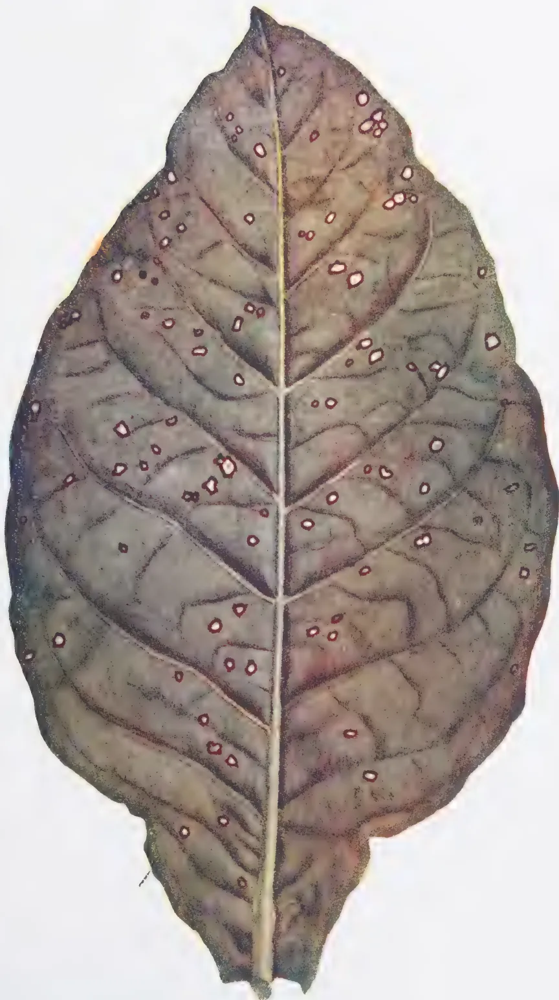
A detailed botanical illustration of a tobacco leaf, showing the characteristic symptoms of Frog-Eye or Eye-Spot Disease. The leaf is dark green with prominent, light-colored veins. Numerous small, circular, reddish-brown spots are scattered across the leaf surface, characteristic of the disease. The spots are often surrounded by a thin, lighter-colored ring, giving them a 'frog-eye' appearance. The leaf is shown from a top-down perspective, with the central vein clearly visible.Frog-Eye or Eye-Spot Disease of Tobacco
This image is a blank white page. It contains no text, figures, or tables. There are a few very small, dark specks scattered across the page, which appear to be scanning artifacts or dust particles. One such speck is located in the upper right quadrant, and another is near the bottom center. 323each spore is capable of being blown by the wind or being carried by rain splashes to alight on a healthy leaf, there to give rise to a new infection which about a week afterwards appears as a brown spot. A short time later this spot in its turn produces spores and the process is repeated. The only requirements of the fungus are warmth and moisture. In tobacco-growing districts of Ceylon the former condition is always fulfilled, the temperature being at all times favourable for the growth of the fungus. Wet weather is favourable for the spread of the disease. If the leaves remain wet for two hours any spores on them can start to grow and consequently heavy dews may provide sufficient moisture for infection to take place. While it is impossible to attempt to control the moisture or temperature of tobacco grown in the field, it is possible to some extent to adopt measures in the seed-beds which render conditions less favourable for the spread of the disease.
Prevention is better than cure. It is easier to take steps from the very beginning to prevent the disease from appearing than to endeavour to check its ravages once it has gained a foothold on the plants. The steps to be taken in the various stages of the crop to prevent unnecessary infection and to minimise the ravages of the disease are given below :
1. Seed.—The fungus not only attacks the leaves but may also occur on the capsules or fruits of tobacco plants. When the seed is collected small pieces of the capsules are often found mixed with the seed and on these spores of the fungus may be present. There is therefore the danger of introducing the disease into the nursery with the seed. To prevent this, the sterilization of the seed is recommended. The seeds should be placed in a bag of muslin or cheese cloth and allowed to soak for 15 minutes in a 1:1000 solution of silver nitrate in distilled or freshly gathered rain water (9 grains silver nitrate in 1 pint water). Silver nitrate does not keep well and a freshly prepared solution from fresh crystals should always be used. The bag containing the seed should be well shaken in the solution so that the seed is thoroughly wetted. After soaking for 15 minutes the bag and seed should be washed for 10 minutes in running water or in several changes of clean water. The seed should be spread out to dry in the shade before planting.
2. Treatment of seed-beds.—Having obtained clean seed it is necessary that the nursery-beds should also be clean. The best site for nursery beds is in freshly cleared virgin soil as far removed from old tobacco land as possible. This soil is not always available and it is best to attempt to sterilize the soil of the nursery. Heap a layer of vegetable trash such as straw or weeds from the jungle to the depth of at least one foot all over the nursery and burn it thoroughly. Tobacco stalks and tobacco rubbish should not be used for this purpose. The burning will tend to kill off other harmful organisms besides the spores of the fungus causing frog-eye. To ensure adequate drainage the beds should be well raised.
3243. Spraying.—Even when great care is taken to use clean seed and to sterilize the soil of the nursery beds, there is always the possibility of the spores of the fungus causing frog-eye being brought by the wind and affecting nursery plants. The nursery plants should be sprayed once a week with Bordeaux Mixture (2-2-40) or some other efficient copper spray. Spraying is much more effective if it is started before the disease appears. To spray the tobacco plants in the field is too expensive to be practicable. Spraying tends to make plants more vigorous and healthy.
4. Priming.—Judicious priming, i.e., the removal of lower and diseased leaves, is valuable in reducing the infection of leaves after the plants have been transferred to the field. Priming should be started as soon as diseased leaves are seen but should not be carried out to excess otherwise the growth of the plants will be checked. Once the plants are well grown the primed leaves may be cured separately and sold with the 'sand leaves'.
5. Harvesting.—Mature leaves are very subject to infection and harvesting should not be delayed. Every effort should be made to harvest leaves as soon as they ripen. When possible, clean leaves should be cured in a different shed from spotted ones.
6. After Harvesting.—Every grower of tobacco should uproot and, if possible burn, the stalk and trash remaining from the tobacco crop within one month after the completion of the harvest. This action is most important if the gradual increase in the incidence of disease is to be checked. So important is it that in some parts of the world it is enforced by law. Tobacco trash left on the land carries over diseases from one season to the next and is often largely responsible for the severe attack of diseases.
325ANIMAL DISEASE RETURN FOR THE MONTH
ENDED 31 OCTOBER, 1934
| Province, &c. | Disease | No. of Cases up to Date since Jan. 1st 1933 | Fresh Cases | Recoveries | Deaths | Balance III | No. Shot |
|---|---|---|---|---|---|---|---|
| Western | Rinderpest | ... | ... | ... | ... | ... | ... |
| Foot-and-mouth disease | 660 | 7 | 658 | 2 | ... | ... | |
| Anthrax | ... | ... | ... | ... | ... | ... | |
| Rabies (Dogs) | 12 | ... | ... | ... | ... | 12 | |
| Piroplasmosis | ... | ... | ... | ... | ... | ... | |
| Colombo Municipality | Rinderpest | ... | ... | ... | ... | ... | ... |
| Foot-and-mouth disease | 664 | ... | 642 | 22 | ... | ... | |
| Anthrax | 9 | ... | ... | 9 | ... | ... | |
| Rabies (Dogs) | 4 | ... | ... | ... | ... | 4 | |
| Haemorrhagic Septicaemia | ... | ... | ... | ... | ... | ... | |
| Black Quarter | ... | ... | ... | ... | ... | ... | |
| Cattle Quarantine Station | Bovine Tuberculosis | ... | ... | ... | ... | ... | ... |
| Rinderpest | ... | ... | ... | ... | ... | ... | |
| Foot-and-mouth disease | 11 | ... | 10 | 1 | ... | ... | |
| Central | Anthrax (Sheep & Goats) | 281 | 36 | ... | 281 | ... | ... |
| Rinderpest | ... | ... | ... | ... | ... | ... | |
| Foot-and-mouth disease | 73 | 2 | 73 | ... | ... | ... | |
| Anthrax | ... | ... | ... | ... | ... | ... | |
| Bovine Tuberculosis | 11* | 1 | ... | 1 | 5 | 5† | |
| Southern | Rabies (Dogs) | ... | ... | ... | ... | ... | ... |
| Rinderpest | ... | ... | ... | ... | ... | ... | |
| Foot-and-mouth disease | 159 | ... | 159 | ... | ... | ... | |
| Anthrax | ... | ... | ... | ... | ... | ... | |
| Northern | Rabies (Dogs) | 2‡ | ... | ... | 1 | ... | 1 |
| Rinderpest | 144 | ... | 43 | 93 | ... | 8 | |
| Foot-and-mouth disease | 28 | ... | 28 | ... | ... | ... | |
| Anthrax | ... | ... | ... | ... | ... | ... | |
| Black Quarter | ... | ... | ... | ... | ... | ... | |
| Eastern | Rabies (Dogs) | ... | ... | ... | ... | ... | ... |
| Rinderpest | ... | ... | ... | ... | ... | ... | |
| Foot-and-mouth disease | 345 | 211 | 327 | 3 | 15 | ... | |
| North-Western | Anthrax | ... | ... | ... | ... | ... | ... |
| Rinderpest | ... | ... | ... | ... | ... | ... | |
| Foot-and-mouth disease | 440 | 345 | 439 | 1 | ... | ... | |
| Anthrax | ... | ... | ... | ... | ... | ... | |
| Rabies (Dogs) | 44|| | 8 | ... | 16 | ... | 28 | |
| North-Central | Piroplasmosis | 1 | ... | ... | 1 | ... | ... |
| Rinderpest | 63 | ... | 13 | 44 | ... | 6 | |
| Foot-and-mouth disease | ... | ... | ... | ... | ... | ... | |
| Uva | Anthrax | ... | ... | ... | ... | ... | ... |
| Rinderpest | ... | ... | ... | ... | ... | ... | |
| Foot-and-mouth disease | 289 | ... | 282 | 7 | ... | ... | |
| Anthrax | ... | ... | ... | ... | ... | ... | |
| Sabaragamuwa | Bovine Tuberculosis | 1 | ... | ... | 1 | ... | ... |
| Rinderpest | ... | ... | ... | ... | ... | ... | |
| Foot-and-mouth disease | 256 | ... | 256 | ... | ... | ... | |
| Anthrax | ... | ... | ... | ... | ... | ... | |
| Piroplasmosis | ... | ... | ... | ... | ... | ... | |
| Haemorrhagic Septicaemia | 23 | ... | 3 | 20 | ... | ... | |
| Rabies (Dogs) | 9 | 1 | ... | ... | ... | 9 |
* 1 case, a dog. † Includes 1 slaughtered at Kandy Slaughter House. ‡ 1 case, a cow.
|| Includes 2 cows and 6 jackals.
G. V. S. Office.
Colombo, 14th November, 1934.
M. CRAWFORD,
Government Veterinary Surgeon
326| Station | Temperature | Humidity | Amount of Cloud | Rainfall | ||||||
|---|---|---|---|---|---|---|---|---|---|---|
| Mean Maximum | Difference from Average | Mean Minimum | Difference from Average | Day | Night (from Minimum) | Amount | No. of Rainy Days | Difference from Average | ||
| ° | ° | ° | ° | % | % | Inches | Inches | |||
| Colombo | 84.5 | 0 | 73.9 | -1.2 | 78 | 93 | 7.4 | 21.10 | 25 | + 6.73 |
| Puttalam | 86.3 | +0.8 | 75.2 | -0.3 | 75 | 91 | 6.5 | 8.81 | 18 | - 0.02 |
| Mannar | 87.5 | +0.3 | 77.9 | +0.8 | 76 | 84 | 6.5 | 8.23 | 13 | + 0.36 |
| Jaffna | 85.7 | +0.9 | 77.4 | +0.4 | 80 | 91 | 6.1 | 10.80 | 18 | + 1.37 |
| Trincomalee | 87.4 | -0.2 | 75.8 | +0.6 | 72 | 86 | 5.9 | 13.64 | 19 | + 5.17 |
| Batticaloa | 85.9 | -0.9 | 75.4 | +0.6 | 74 | 91 | 6.8 | 7.47 | 16 | + 0.81 |
| Hambantota | 83.6 | -2.4 | 74.8 | -0.1 | 80 | 88 | 5.9 | 12.82 | 20 | + 8.18 |
| Galle | 82.9 | 0 | 74.3 | -1.1 | 84 | 93 | 6.4 | 34.69 | 23 | + 21.80 |
| Ratnapura | 87.1 | +0.4 | 72.2 | -0.4 | 80 | 98 | 7.5 | 19.75 | 26 | + 1.21 |
| A'pura | 89.8 | +2.0 | 73.8 | +0.4 | 68 | 95 | 8.1 | 7.41 | 15 | - 2.31 |
| Kurunegala | 89.4 | +3.0 | 75.4 | +2.1 | 68 | 82 | 7.3 | 11.33 | 21 | - 4.34 |
| Kandy | 85.3 | +2.3 | 68.8 | +0.3 | 70 | 90 | 7.0 | 10.71 | 22 | - 0.90 |
| Badulla | 84.2 | +1.7 | 65.9 | +0.6 | 70 | 95 | 6.6 | 9.97 | 21 | + 0.35 |
| Diyatalawa | 75.8 | -0.6 | 60.7 | +0.3 | 72 | 89 | 6.6 | 6.50 | 20 | - 3.42 |
| Hakgala | 70.7 | +2.7 | 56.0 | -0.2 | 81 | 91 | 6.1 | 9.68 | 22 | - 2.48 |
| N'Eliya | 68.4 | +1.3 | 51.8 | -0.8 | 78 | 91 | 8.2 | 10.84 | 28 | - 0.12 |
The rainfall this month was above normal over the greater part of the south-western low-country, Galle and some neighbouring stations reporting over 20 inches above normal. Elsewhere, excesses and deficits were irregularly distributed, but, on the whole, deficits were rather more numerous than excesses.
The highest monthly totals were 46.52 inches, at St. Leonard's, and 45.21 inches, at Kokkawita, while totals of over 40 inches were reported from Batapola, Baddegama, and Labuduwa.
The only station with a monthly total of less than 2 inches was Yala, 1.69 inches, while a few stations, mainly near Anuradhapura and along the east coast south of Batticaloa, had totals of less than 5 inches.
The rainfall of this month ended the drought, which had persisted in the north and east for some five or six months, and in the south-west since July.
57 reports of daily falls of at least 5 inches were received, from 44 stations. Of these, 12 occurred on the 7th-8th, and 30 on the 8th-9th. The highest daily fall reported was 15.10 inches, on the 7th-8th, at St. Leonard's Estate, Elpitiya, and nine more falls of at least 10 inches were also recorded. The total rainfall for the two days 7th-9th was above 20 inches at St. Leonard's (25.30 inches) and Batapola (20.29 inches), and above 15 inches at Baddegama, Hiyare, Labuduwa, Moratuwa, Matara, Bandaragama, Kanana, and Beau Séjour.
At the beginning of the month, rainfall was light, and confined to the south-western districts. From the 3rd local thunderstorms gave some rain in the north and east, while the rainfall in the south-west increased from the 4th, and was particularly heavy from the 7th to the 9th. About the 12th the local thunderstorms in the north and east ceased, while the rains in the south-west decreased, but after the middle of the month weak barometric gradients were experienced, and local afternoon or evening thunderstorms were reported from all over the Island. The resulting rains, however, were usually heaviest in the south-west. About the 26th, an area of low pressure in the Bay of Bengal began to affect Ceylon, and the character and distribution of the rainfall changed. Thunder was less often reported, and heavy rain was recorded from the north, as well as from the south-west. By the end of the month, the trough of low pressure had moved away, and the rainfall moderated.
Temperature, humidity, and cloud show, on the whole, no marked deviations from normal. Barometric pressure was about normal, while the wind was above normal in the north and east, and below normal elsewhere. Its direction was generally south-west or west-south-west, except along the east coast.
H. JAMESON,
Supdt., Observatory